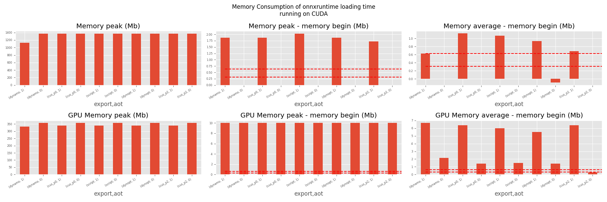
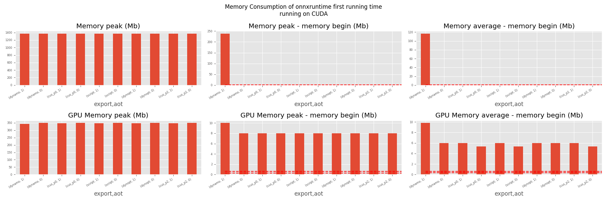
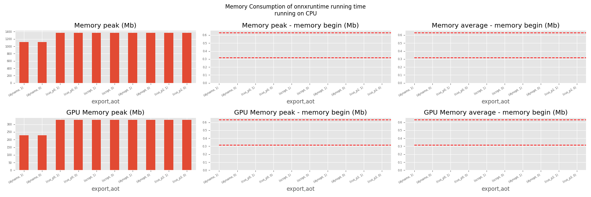

Note
Go to the end to download the full example code.
201: Evaluate different ways to export a torch model to ONNX
The example evaluates the performance of onnxruntime of a simple torch model after it was converted into ONNX through different processes:
TorchScript-based ONNX Exporter, lets call it script
TorchDynamo-based ONNX Exporter, lets call it dynamo
if available, the previous model but optimized, dynopt
a custom exporter cus_p0, this exporter supports a very limited set of models, as dynamo, it relies on torch.fx but the design is closer to what tensorflow-onnx does.
the same exporter but unused nodes were removed and constants were folded, cus_p2
To run the script:
python _doc/examples/plot_torch_export --help
The script takes around 12 minutes with a larger models.
Some helpers
from experimental_experiment.args import get_parsed_args
script_args = get_parsed_args(
"plot_torch_export",
description=__doc__,
scenarios={
"small": "small model to test",
"middle": "55Mb model",
"large": "1Gb model",
},
warmup=5,
repeat=5,
maxtime=(
2,
"maximum time to run a model to measure the computation time, "
"it is 0.1 when scenario is small",
),
expose="scenarios,repeat,warmup",
)
import contextlib
import itertools
import os
import platform
import pprint
import multiprocessing
import time
import cProfile
import pstats
import io
import warnings
import logging
from pstats import SortKey
try:
with warnings.catch_warnings():
warnings.simplefilter("ignore")
import onnxruntime
has_cuda = "CUDAExecutionProvider" in onnxruntime.get_available_providers()
except ImportError:
print("onnxruntime not available.")
import sys
sys.exit(0)
import numpy as np
import matplotlib.pyplot as plt
import pandas
import onnx
from onnx_array_api.profiling import profile2graph
import torch
from torch import nn
import torch.nn.functional as F
import experimental_experiment
from experimental_experiment.torch_interpreter import to_onnx
from experimental_experiment.xbuilder import OptimizationOptions
from experimental_experiment.plotting.memory import memory_peak_plot
from experimental_experiment.ext_test_case import measure_time, get_figure
from experimental_experiment.memory_peak import start_spying_on
from experimental_experiment.ext_test_case import unit_test_going
from experimental_experiment.helpers import pretty_onnx
from tqdm import tqdm
has_cuda = has_cuda and torch.cuda.device_count() > 0
logging.disable(logging.ERROR)
def system_info():
obs = {}
obs["processor"] = platform.processor()
obs["cores"] = multiprocessing.cpu_count()
try:
obs["cuda"] = 1 if torch.cuda.device_count() > 0 else 0
obs["cuda_count"] = torch.cuda.device_count()
obs["cuda_name"] = torch.cuda.get_device_name()
obs["cuda_capa"] = torch.cuda.get_device_capability()
except (RuntimeError, AssertionError):
# no cuda
pass
return obs
pprint.pprint(system_info())
{'cores': 20,
'cuda': 1,
'cuda_capa': (8, 9),
'cuda_count': 1,
'cuda_name': 'NVIDIA GeForce RTX 4060 Laptop GPU',
'processor': 'x86_64'}
Scripts arguments
if script_args.scenario in (None, "small"):
script_args.maxtime = 0.1
if unit_test_going():
script_args.warmup = 1
script_args.repeat = 1
script_args.maxtime = 0.1
script_args.scenario = "small"
print(f"scenario={script_args.scenario or 'small'}")
print(f"warmup={script_args.warmup}")
print(f"repeat={script_args.repeat}")
print(f"maxtime={script_args.maxtime}")
scenario=small
warmup=5
repeat=5
maxtime=0.1
The model
A simple model to convert.
class MyModelClass(nn.Module):
def __init__(self, scenario=script_args.scenario):
super().__init__()
if scenario == "middle":
self.large = False
self.conv1 = nn.Conv2d(1, 128, 5)
self.conv2 = nn.Conv2d(128, 16, 5)
self.fc1 = nn.Linear(13456, 1024)
self.fcs = []
self.fc2 = nn.Linear(1024, 128)
self.fc3 = nn.Linear(128, 10)
elif scenario in (None, "small"):
self.large = False
self.conv1 = nn.Conv2d(1, 16, 5)
self.conv2 = nn.Conv2d(16, 16, 5)
self.fc1 = nn.Linear(16, 512)
self.fcs = []
self.fc2 = nn.Linear(512, 128)
self.fc3 = nn.Linear(128, 10)
elif scenario in (None, "large"):
self.large = True
self.conv1 = nn.Conv2d(1, 128, 5)
self.conv2 = nn.Conv2d(128, 16, 5)
self.fc1 = nn.Linear(13456, 4096)
# torch script does not support loops.
self.fca = nn.Linear(4096, 4096)
self.fcb = nn.Linear(4096, 4096)
self.fcc = nn.Linear(4096, 4096)
self.fcd = nn.Linear(4096, 4096)
self.fce = nn.Linear(4096, 4096)
self.fcf = nn.Linear(4096, 4096)
self.fcg = nn.Linear(4096, 4096)
self.fch = nn.Linear(4096, 4096)
self.fci = nn.Linear(4096, 4096)
self.fck = nn.Linear(4096, 4096)
self.fcl = nn.Linear(4096, 4096)
self.fcm = nn.Linear(4096, 4096)
self.fcn = nn.Linear(4096, 4096)
# end of the unfolded loop.
self.fc2 = nn.Linear(4096, 128)
self.fc3 = nn.Linear(128, 10)
else:
raise ValueError(f"Unsupported scenario={scenario!r}.")
def forward(self, x):
x = F.max_pool2d(F.relu(self.conv1(x)), (2, 2))
x = F.max_pool2d(F.relu(self.conv2(x)), 2)
x = torch.flatten(x, 1)
x = F.relu(self.fc1(x))
if self.large:
# loop
x = F.relu(self.fca(x))
x = F.relu(self.fcb(x))
x = F.relu(self.fcc(x))
x = F.relu(self.fcd(x))
x = F.relu(self.fce(x))
x = F.relu(self.fcf(x))
x = F.relu(self.fcg(x))
x = F.relu(self.fch(x))
x = F.relu(self.fci(x))
x = F.relu(self.fck(x))
x = F.relu(self.fcl(x))
x = F.relu(self.fcm(x))
x = F.relu(self.fcn(x))
# end of the loop
x = F.relu(self.fc2(x))
x = self.fc3(x)
return x
def create_model_and_input(scenario=script_args.scenario):
if scenario == "middle":
shape = [1, 1, 128, 128]
elif scenario in (None, "small"):
shape = [1, 1, 16, 16]
elif scenario == "large":
shape = [1, 1, 128, 128]
else:
raise ValueError(f"Unsupported scenario={scenario!r}.")
input_tensor = torch.rand(*shape).to(torch.float32)
model = MyModelClass(scenario=scenario)
assert model(input_tensor) is not None
return model, input_tensor
def torch_model_size(model):
size_model = 0
for param in model.parameters():
size = param.numel() * torch.finfo(param.data.dtype).bits / 8
size_model += size
return size_model
model, input_tensor = create_model_and_input()
model_size = torch_model_size(model)
print(f"model size={model_size / 2 ** 20} Mb")
model size=0.31467437744140625 Mb
The exporters
def export_script(filename, model, *args):
with contextlib.redirect_stdout(io.StringIO()):
with warnings.catch_warnings():
warnings.simplefilter("ignore")
torch.onnx.export(model, *args, filename, input_names=["input"])
def export_dynamo(filename, model, *args):
with contextlib.redirect_stdout(io.StringIO()):
with warnings.catch_warnings():
warnings.simplefilter("ignore")
export_output = torch.onnx.export(model, args, dynamo=True)
export_output.save(filename)
def export_dynopt(filename, model, *args):
with contextlib.redirect_stdout(io.StringIO()):
with warnings.catch_warnings():
warnings.simplefilter("ignore")
export_output = torch.onnx.export(model, args, dynamo=True)
model_onnx = export_output.model_proto
from experimental_experiment.convert.convert_helper import (
optimize_model_proto_oxs,
)
optimized_model = optimize_model_proto_oxs(model_onnx)
with open(filename, "wb") as f:
f.write(optimized_model.SerializeToString())
def export_cus_p0(filename, model, *args):
onx = to_onnx(model, tuple(args), input_names=["input"])
with open(filename, "wb") as f:
f.write(onx.SerializeToString())
def export_cus_p2(filename, model, *args):
onx = to_onnx(
model,
tuple(args),
input_names=["input"],
options=OptimizationOptions(
remove_unused=True,
constant_folding=True,
),
)
with open(filename, "wb") as f:
f.write(onx.SerializeToString())
Lets check they are working.
export_functions = [
export_script,
export_dynamo,
export_dynopt,
export_cus_p0,
export_cus_p2,
]
exporters = {f.__name__.replace("export_", ""): f for f in export_functions}
supported_exporters = {}
for k, v in exporters.items():
print(f"run exporter {k}")
filename = f"plot_torch_export_{k}.onnx"
try:
v(filename, model, input_tensor)
except Exception as e:
print(f"skipped due to {str(e)[:1000]}")
continue
supported_exporters[k] = v
print(f"done. size={os.stat(filename).st_size / 2 ** 20:1.0f} Mb")
run exporter script
done. size=0 Mb
run exporter dynamo
done. size=0 Mb
run exporter dynopt
done. size=0 Mb
run exporter cus_p0
done. size=0 Mb
run exporter cus_p2
done. size=0 Mb
Exporter memory
def flatten(ps):
obs = ps["cpu"].to_dict(unit=2**20)
if "gpus" in ps:
for i, g in enumerate(ps["gpus"]):
for k, v in g.to_dict(unit=2**20).items():
obs[f"gpu{i}_{k}"] = v
return obs
data = []
for k, v in supported_exporters.items():
print(f"run exporter for memory {k}")
filename = f"plot_torch_export_{k}.onnx"
if has_cuda:
torch.cuda.set_device(0)
stat = start_spying_on(cuda=1 if has_cuda else 0)
v(filename, model, input_tensor)
obs = flatten(stat.stop())
print("done.")
onx = onnx.load(filename)
obs.update(dict(nodes=len(onx.graph.node), export=k))
data.append(obs)
stat = start_spying_on(cuda=1 if has_cuda else 0)
exported_mod = torch.export.export(model, (input_tensor,))
obs = flatten(stat.stop())
obs.update(dict(export="torch.fx"))
data.append(obs)
run exporter for memory script
done.
run exporter for memory dynamo
done.
run exporter for memory dynopt
done.
run exporter for memory cus_p0
done.
run exporter for memory cus_p2
done.
The result.
df1 = pandas.DataFrame(data)
df1.to_csv("plot_torch_export_memory.csv", index=False)
df1.to_excel("plot_torch_export_memory.xlsx", index=False)
print(df1)
ax = memory_peak_plot(
data,
bars=[model_size * i / 2**20 for i in range(1, 5)],
suptitle=f"Memory Consumption of the Export\nmodel size={model_size / 2**20:1.0f} Mb",
)
get_figure(ax).savefig("plot_torch_export_memory.png")

peak mean n begin end gpu0_peak gpu0_mean gpu0_n gpu0_begin gpu0_end nodes export
0 6733.914062 6733.730469 11 6733.914062 6733.910156 1641.617188 1641.617188 11 1641.617188 1641.617188 12.0 script
1 6733.992188 6733.920313 70 6733.910156 6733.992188 1641.617188 1641.617188 70 1641.617188 1641.617188 13.0 dynamo
2 6733.996094 6733.992247 66 6733.992188 6733.992188 1641.617188 1641.617188 66 1641.617188 1641.617188 13.0 dynopt
3 6733.996094 6733.994699 14 6733.992188 6733.996094 1641.617188 1641.617188 14 1641.617188 1641.617188 12.0 cus_p0
4 6734.000000 6733.996394 13 6733.996094 6733.996094 1641.617188 1641.617188 13 1641.617188 1641.617188 12.0 cus_p2
5 6734.000000 6733.997070 8 6733.996094 6734.000000 1641.617188 1641.617188 8 1641.617188 1641.617188 NaN torch.fx
Exporter speed
data = []
for k, v in supported_exporters.items():
print(f"run exporter {k}")
filename = f"plot_torch_export_{k}.onnx"
times = []
for _ in range(script_args.repeat):
begin = time.perf_counter()
v(filename, model, input_tensor)
duration = time.perf_counter() - begin
times.append(duration)
onx = onnx.load(filename)
print("done.")
data.append(
dict(
export=k,
time=np.mean(times),
min=min(times),
max=max(times),
first=times[0],
last=times[-1],
std=np.std(times),
nodes=len(onx.graph.node),
)
)
run exporter script
done.
run exporter dynamo
done.
run exporter dynopt
done.
run exporter cus_p0
done.
run exporter cus_p2
done.
The last export to measure time torch spends in export the model before any other export can begin the translation except the first one.
times = []
for _ in range(script_args.repeat):
begin = time.perf_counter()
exported_mod = torch.export.export(model, (input_tensor,))
duration = time.perf_counter() - begin
times.append(duration)
data.append(
dict(
export="torch.fx",
time=np.mean(times),
min=min(times),
max=max(times),
first=times[0],
last=times[-1],
std=np.std(times),
nodes=len(onx.graph.node),
)
)
The result.
df1 = pandas.DataFrame(data)
df1.to_csv("plot_torch_export_time.csv", index=False)
df1.to_excel("plot_torch_export_time.xlsx", index=False)
print(df1)
fig, ax = plt.subplots(1, 1)
dfi = df1[["export", "time", "std"]].set_index("export")
dfi["time"].plot.bar(ax=ax, title="Export time", yerr=dfi["std"], rot=30)
fig.tight_layout()
fig.savefig("plot_torch_export_time.png")

export time min max first last std nodes
0 script 0.021796 0.018742 0.025842 0.022808 0.019906 0.002462 12
1 dynamo 0.716174 0.567125 1.116046 1.116046 0.664507 0.204175 13
2 dynopt 0.784681 0.540386 1.178419 1.178419 0.920529 0.234523 13
3 cus_p0 0.094850 0.062261 0.168654 0.062261 0.077300 0.038041 12
4 cus_p2 0.084501 0.068477 0.097587 0.091651 0.068477 0.010085 12
5 torch.fx 0.049982 0.047733 0.052599 0.052599 0.047733 0.001707 12
Exporter Profiling
def clean_text(text):
pathes = [
os.path.abspath(os.path.normpath(os.path.join(os.path.dirname(torch.__file__), ".."))),
os.path.abspath(os.path.normpath(os.path.join(os.path.dirname(onnx.__file__), ".."))),
os.path.abspath(
os.path.normpath(
os.path.join(os.path.dirname(experimental_experiment.__file__), "..")
)
),
]
for p in pathes:
text = text.replace(p, "")
text = text.replace("experimental_experiment", "experimental_experiment".upper())
return text
def profile_function(name, export_function, verbose=False):
print(f"profile {name}: {export_function}")
pr = cProfile.Profile()
pr.enable()
for _ in range(script_args.repeat):
export_function("dummyc.onnx", model, input_tensor)
pr.disable()
s = io.StringIO()
sortby = SortKey.CUMULATIVE
ps = pstats.Stats(pr, stream=s).sort_stats(sortby)
ps.print_stats()
raw = s.getvalue()
text = "\n".join(raw.split("\n")[:200])
if verbose:
print(text)
with open(f"plot_torch_export_profile_{name}.txt", "w") as f:
f.write(raw)
root, nodes = profile2graph(ps, clean_text=clean_text)
text = root.to_text()
with open(f"plot_torch_export_profile_{name}_h.txt", "w") as f:
f.write(text)
print("done.")
profile_function("custom0", export_cus_p0, True)
profile_function("custom2", export_cus_p2)
profile custom0: <function export_cus_p0 at 0x7fe9e83bd940>
539807 function calls (528905 primitive calls) in 0.941 seconds
Ordered by: cumulative time
ncalls tottime percall cumtime percall filename:lineno(function)
5 0.001 0.000 0.554 0.111 ~/github/experimental-experiment/experimental_experiment/xbuilder/graph_builder.py:5238(to_onnx)
5 0.001 0.000 0.518 0.104 ~/github/experimental-experiment/experimental_experiment/xbuilder/graph_builder.py:5771(optimize)
5 0.000 0.000 0.504 0.101 ~/github/experimental-experiment/experimental_experiment/xbuilder/graph_builder.py:6093(optimize_with_patterns)
5 0.006 0.001 0.503 0.101 ~/github/experimental-experiment/experimental_experiment/xoptim/graph_builder_optim.py:1049(optimize)
1065 0.016 0.000 0.482 0.000 ~/github/experimental-experiment/experimental_experiment/xoptim/patterns_api.py:131(enumerate_matches)
720 0.001 0.000 0.442 0.001 ~/github/experimental-experiment/experimental_experiment/xoptim/patterns_api.py:971(match)
720 0.001 0.000 0.441 0.001 ~/github/experimental-experiment/experimental_experiment/xoptim/patterns_api.py:358(_get_match_pattern)
10 0.000 0.000 0.440 0.044 ~/github/experimental-experiment/experimental_experiment/xoptim/patterns_api.py:308(_build_pattern)
1780 0.001 0.000 0.428 0.000 <frozen _collections_abc>:804(get)
1780 0.424 0.000 0.426 0.000 <frozen os>:709(__getitem__)
15 0.001 0.000 0.424 0.028 ~/github/experimental-experiment/experimental_experiment/xbuilder/graph_builder.py:387(__init__)
10 0.000 0.000 0.424 0.042 ~/github/experimental-experiment/experimental_experiment/xbuilder/graph_builder.py:766(empty_copy)
80/20 0.001 0.000 0.359 0.018 ~/vv/this312/lib/python3.12/site-packages/torch/nn/functional.py:1702(relu)
35/5 0.000 0.000 0.205 0.041 ~/vv/this312/lib/python3.12/site-packages/torch/nn/modules/module.py:1771(_call_impl)
5 0.000 0.000 0.203 0.041 ~/vv/this312/lib/python3.12/site-packages/torch/export/_trace.py:1865(forward)
5 0.000 0.000 0.190 0.038 ~/github/experimental-experiment/_doc/examples/plot_torch_export_201.py:191(forward)
1260 0.004 0.000 0.150 0.000 ~/vv/this312/lib/python3.12/site-packages/torch/fx/experimental/proxy_tensor.py:1316(__torch_function__)
1260 0.003 0.000 0.144 0.000 ~/vv/this312/lib/python3.12/site-packages/torch/fx/experimental/proxy_tensor.py:1345(__torch_function__)
2130 0.005 0.000 0.141 0.000 ~/vv/this312/lib/python3.12/site-packages/torch/_export/non_strict_utils.py:955(__torch_function__)
60 0.001 0.000 0.129 0.002 ~/vv/this312/lib/python3.12/site-packages/torch/_ops.py:915(handler)
60 0.007 0.000 0.126 0.002 ~/vv/this312/lib/python3.12/site-packages/torch/_library/utils.py:281(handle_dispatch_mode)
300/60 0.001 0.000 0.117 0.002 ~/vv/this312/lib/python3.12/site-packages/torch/utils/_stats.py:22(wrapper)
60 0.000 0.000 0.117 0.002 ~/vv/this312/lib/python3.12/site-packages/torch/fx/experimental/proxy_tensor.py:1414(__torch_dispatch__)
60 0.002 0.000 0.116 0.002 ~/vv/this312/lib/python3.12/site-packages/torch/fx/experimental/proxy_tensor.py:770(proxy_call)
40/10 0.000 0.000 0.113 0.011 ~/vv/this312/lib/python3.12/site-packages/torch/_jit_internal.py:612(fn)
20/5 0.000 0.000 0.084 0.017 {built-in method torch.flatten}
90/30 0.000 0.000 0.063 0.002 ~/vv/this312/lib/python3.12/site-packages/torch/overrides.py:1674(handle_torch_function)
340/175 0.000 0.000 0.051 0.000 ~/vv/this312/lib/python3.12/site-packages/torch/_ops.py:805(__call__)
115 0.001 0.000 0.051 0.000 ~/vv/this312/lib/python3.12/site-packages/torch/fx/proxy.py:214(create_proxy)
120 0.002 0.000 0.045 0.000 ~/vv/this312/lib/python3.12/site-packages/torch/fx/experimental/proxy_tensor.py:1871(create_node)
5 0.000 0.000 0.045 0.009 ~/vv/this312/lib/python3.12/site-packages/torch/export/_trace.py:515(_produce_aten_artifact)
5 0.000 0.000 0.041 0.008 ~/github/experimental-experiment/experimental_experiment/xbuilder/graph_builder.py:4961(process)
120 0.001 0.000 0.040 0.000 ~/github/experimental-experiment/experimental_experiment/torch_interpreter/interpreter.py:173(run_node)
20 0.001 0.000 0.040 0.002 {built-in method torch.relu}
240 0.000 0.000 0.039 0.000 ~/vv/this312/lib/python3.12/site-packages/torch/_subclasses/fake_tensor.py:1333(__torch_dispatch__)
30 0.000 0.000 0.039 0.001 ~/vv/this312/lib/python3.12/site-packages/torch/fx/graph_module.py:810(recompile)
240 0.002 0.000 0.038 0.000 ~/vv/this312/lib/python3.12/site-packages/torch/_subclasses/fake_tensor.py:2000(dispatch)
65 0.000 0.000 0.038 0.001 ~/vv/this312/lib/python3.12/site-packages/torch/fx/experimental/proxy_tensor.py:602(track_tensor_tree)
120/65 0.000 0.000 0.037 0.001 ~/vv/this312/lib/python3.12/site-packages/torch/fx/experimental/proxy_tensor.py:624(wrap_with_proxy)
95 0.001 0.000 0.036 0.000 ~/vv/this312/lib/python3.12/site-packages/torch/_subclasses/fake_tensor.py:1418(_cached_dispatch_impl)
15 0.000 0.000 0.034 0.002 ~/vv/this312/lib/python3.12/site-packages/torch/nn/modules/linear.py:124(forward)
60/15 0.001 0.000 0.034 0.002 {built-in method torch._C._nn.linear}
2370/2350 0.002 0.000 0.033 0.000 {built-in method builtins.next}
60 0.001 0.000 0.032 0.001 ~/github/experimental-experiment/experimental_experiment/torch_interpreter/interpreter.py:1367(call_function)
1365/260 0.004 0.000 0.029 0.000 ~/vv/this312/lib/python3.12/site-packages/torch/utils/_pytree.py:1191(unflatten)
190 0.001 0.000 0.029 0.000 ~/github/experimental-experiment/experimental_experiment/xbuilder/graph_builder_opset.py:116(make_node)
210 0.004 0.000 0.029 0.000 ~/github/experimental-experiment/experimental_experiment/xbuilder/graph_builder.py:3760(make_node)
55 0.001 0.000 0.029 0.001 ~/vv/this312/lib/python3.12/site-packages/torch/_subclasses/meta_utils.py:871(meta_tensor)
30 0.000 0.000 0.028 0.001 ~/vv/this312/lib/python3.12/site-packages/torch/fx/graph.py:1528(python_code)
25/5 0.001 0.000 0.027 0.005 ~/vv/this312/lib/python3.12/site-packages/torch/_subclasses/meta_utils.py:1835(__call__)
10 0.000 0.000 0.027 0.003 ~/vv/this312/lib/python3.12/site-packages/torch/nn/modules/conv.py:553(forward)
10 0.000 0.000 0.027 0.003 ~/vv/this312/lib/python3.12/site-packages/torch/nn/modules/conv.py:536(_conv_forward)
40/10 0.001 0.000 0.027 0.003 {built-in method torch.conv2d}
60 0.000 0.000 0.026 0.000 ~/vv/this312/lib/python3.12/site-packages/torch/utils/_traceback.py:171(summary)
115 0.001 0.000 0.025 0.000 ~/vv/this312/lib/python3.12/site-packages/torch/fx/experimental/proxy_tensor.py:495(set_meta)
20/4 0.000 0.000 0.025 0.006 ~/vv/this312/lib/python3.12/site-packages/torch/_subclasses/fake_tensor.py:2902(from_tensor)
55 0.001 0.000 0.024 0.000 ~/vv/this312/lib/python3.12/site-packages/torch/autograd/grad_mode.py:273(__exit__)
20/4 0.001 0.000 0.023 0.006 ~/vv/this312/lib/python3.12/site-packages/torch/_subclasses/fake_tensor.py:341(from_real_tensor)
40/10 0.000 0.000 0.021 0.002 ~/vv/this312/lib/python3.12/site-packages/torch/nn/functional.py:816(_max_pool2d)
5 0.001 0.000 0.021 0.004 ~/github/experimental-experiment/experimental_experiment/xbuilder/graph_builder.py:4513(_build_initializers)
30 0.000 0.000 0.021 0.001 ~/vv/this312/lib/python3.12/site-packages/torch/fx/graph.py:1605(_python_code)
10 0.000 0.000 0.020 0.002 {built-in method torch.max_pool2d}
30 0.003 0.000 0.020 0.001 ~/vv/this312/lib/python3.12/site-packages/torch/fx/graph.py:373(_gen_python_code)
1105/1095 0.001 0.000 0.019 0.000 /usr/lib/python3.12/contextlib.py:132(__enter__)
10 0.000 0.000 0.019 0.002 ~/vv/this312/lib/python3.12/site-packages/torch/utils/_pytree.py:2029(tree_map_with_path)
5 0.000 0.000 0.019 0.004 ~/vv/this312/lib/python3.12/site-packages/torch/_export/non_strict_utils.py:256(make_fake_inputs)
365 0.001 0.000 0.018 0.000 ~/vv/this312/lib/python3.12/site-packages/torch/utils/_pytree.py:1264(tree_flatten)
50 0.001 0.000 0.018 0.000 ~/github/experimental-experiment/experimental_experiment/mini_onnx_builder.py:108(proto_from_array)
2005/365 0.004 0.000 0.018 0.000 ~/vv/this312/lib/python3.12/site-packages/torch/utils/_pytree.py:1272(helper)
95 0.001 0.000 0.018 0.000 ~/vv/this312/lib/python3.12/site-packages/torch/_subclasses/fake_tensor.py:1497(_cache_key)
180 0.001 0.000 0.017 0.000 ~/vv/this312/lib/python3.12/site-packages/torch/utils/_pytree.py:1335(tree_map)
82850/81670 0.014 0.000 0.017 0.000 {built-in method builtins.isinstance}
95 0.000 0.000 0.017 0.000 ~/vv/this312/lib/python3.12/site-packages/torch/_subclasses/fake_tensor.py:1925(_output_from_cache_entry)
20 0.000 0.000 0.017 0.001 ~/vv/this312/lib/python3.12/site-packages/torch/utils/_pytree.py:2061(<genexpr>)
105 0.002 0.000 0.016 0.000 ~/vv/this312/lib/python3.12/site-packages/torch/_subclasses/fake_tensor.py:1852(_get_output_tensor_from_cache_entry)
440/95 0.003 0.000 0.016 0.000 ~/vv/this312/lib/python3.12/site-packages/torch/_subclasses/fake_tensor.py:1607(_prep_args_for_hash)
60 0.003 0.000 0.016 0.000 ~/vv/this312/lib/python3.12/site-packages/torch/utils/_traceback.py:247(_extract_symbolized_tb)
1105/1095 0.001 0.000 0.015 0.000 /usr/lib/python3.12/contextlib.py:141(__exit__)
10 0.000 0.000 0.015 0.001 ~/vv/this312/lib/python3.12/site-packages/torch/fx/graph_module.py:453(__init__)
175/145 0.001 0.000 0.015 0.000 ~/vv/this312/lib/python3.12/site-packages/torch/nn/modules/module.py:1960(__setattr__)
50 0.015 0.000 0.015 0.000 {method 'clone' of 'torch._C.TensorBase' objects}
55 0.002 0.000 0.014 0.000 ~/vv/this312/lib/python3.12/site-packages/torch/autograd/grad_mode.py:269(__enter__)
115 0.000 0.000 0.014 0.000 ~/vv/this312/lib/python3.12/site-packages/torch/fx/experimental/proxy_tensor.py:395(extract_val)
10 0.000 0.000 0.013 0.001 ~/vv/this312/lib/python3.12/site-packages/torch/_export/passes/replace_with_hop_pass_util.py:157(_replace_with_hop_pass_helper)
115 0.000 0.000 0.013 0.000 ~/vv/this312/lib/python3.12/site-packages/torch/fx/experimental/proxy_tensor.py:369(snapshot_fake)
10 0.000 0.000 0.013 0.001 ~/vv/this312/lib/python3.12/site-packages/torch/fx/graph_module.py:566(graph)
115 0.002 0.000 0.013 0.000 ~/vv/this312/lib/python3.12/site-packages/torch/_subclasses/fake_impls.py:1062(fast_detach)
275 0.004 0.000 0.013 0.000 ~/vv/this312/lib/python3.12/site-packages/torch/_subclasses/fake_tensor.py:702(__new__)
120 0.000 0.000 0.013 0.000 ~/vv/this312/lib/python3.12/site-packages/torch/fx/experimental/proxy_tensor.py:1106(create_node)
4920 0.002 0.000 0.012 0.000 /usr/lib/python3.12/traceback.py:265(__init__)
5 0.000 0.000 0.012 0.002 ~/github/experimental-experiment/experimental_experiment/torch_interpreter/_aten_functions.py:3225(aten_flatten_using_ints)
5 0.000 0.000 0.011 0.002 ~/vv/this312/lib/python3.12/site-packages/torch/_export/utils.py:665(apply_runtime_assertion_pass)
720 0.002 0.000 0.011 0.000 ~/vv/this312/lib/python3.12/site-packages/torch/fx/graph.py:585(emit_node)
5720 0.011 0.000 0.011 0.000 {built-in method builtins.setattr}
115 0.002 0.000 0.011 0.000 ~/vv/this312/lib/python3.12/site-packages/torch/fx/experimental/proxy_tensor.py:521(track_tensor)
1350 0.001 0.000 0.011 0.000 ~/vv/this312/lib/python3.12/site-packages/torch/_subclasses/meta_utils.py:195(is_sparse_any)
5260 0.003 0.000 0.010 0.000 /usr/lib/python3.12/traceback.py:318(line)
115 0.001 0.000 0.010 0.000 ~/vv/this312/lib/python3.12/site-packages/torch/fx/passes/shape_prop.py:35(_extract_tensor_metadata)
2455 0.004 0.000 0.010 0.000 ~/vv/this312/lib/python3.12/site-packages/torch/fx/node.py:846(__setattr__)
60 0.010 0.000 0.010 0.000 {built-in method torch._C._profiler.symbolize_tracebacks}
50/45 0.001 0.000 0.010 0.000 ~/github/experimental-experiment/experimental_experiment/xbuilder/graph_builder.py:6276(compute_constant)
55 0.003 0.000 0.010 0.000 ~/vv/this312/lib/python3.12/site-packages/torch/_subclasses/meta_utils.py:278(describe_tensor)
120 0.001 0.000 0.010 0.000 ~/vv/this312/lib/python3.12/site-packages/torch/fx/proxy.py:148(create_node)
5 0.000 0.000 0.009 0.002 ~/vv/this312/lib/python3.12/site-packages/torch/fx/_symbolic_trace.py:616(create_args_for_root)
30 0.000 0.000 0.009 0.000 ~/vv/this312/lib/python3.12/site-packages/torch/fx/graph_module.py:98(_forward_from_src)
30 0.000 0.000 0.009 0.000 ~/vv/this312/lib/python3.12/site-packages/torch/fx/graph_module.py:104(_method_from_src)
30 0.000 0.000 0.009 0.000 ~/vv/this312/lib/python3.12/site-packages/torch/fx/graph_module.py:93(_exec_with_source)
5 0.000 0.000 0.009 0.002 ~/vv/this312/lib/python3.12/site-packages/torch/export/exported_program.py:910(__init__)
5 0.000 0.000 0.008 0.002 ~/vv/this312/lib/python3.12/site-packages/torch/_export/utils.py:909(placeholder_naming_pass)
30 0.008 0.000 0.008 0.000 {built-in method builtins.compile}
245 0.001 0.000 0.008 0.000 ~/github/experimental-experiment/experimental_experiment/xbuilder/graph_builder.py:7750(_make_node_set_type_shape)
5 0.000 0.000 0.008 0.002 ~/vv/this312/lib/python3.12/site-packages/torch/fx/_lazy_graph_module.py:57(_make_graph_module)
145 0.002 0.000 0.008 0.000 ~/vv/this312/lib/python3.12/site-packages/torch/_subclasses/fake_tensor.py:999(_flatten_into)
390 0.000 0.000 0.008 0.000 {method 'extend' of 'list' objects}
5 0.000 0.000 0.008 0.002 ~/vv/this312/lib/python3.12/site-packages/torch/export/_trace.py:475(_replace_unbacked_bindings)
60 0.000 0.000 0.008 0.000 ~/vv/this312/lib/python3.12/site-packages/torch/fx/_symbolic_trace.py:682(<genexpr>)
10 0.001 0.000 0.008 0.001 ~/github/experimental-experiment/experimental_experiment/xbuilder/graph_builder.py:6530(constant_folding)
55 0.000 0.000 0.008 0.000 ~/vv/this312/lib/python3.12/site-packages/torch/fx/_symbolic_trace.py:679(proxy_placeholder)
55 0.000 0.000 0.008 0.000 ~/vv/this312/lib/python3.12/site-packages/torch/fx/_symbolic_trace.py:884(_proxy_placeholder)
5 0.000 0.000 0.008 0.002 ~/vv/this312/lib/python3.12/site-packages/torch/_export/non_strict_utils.py:346(<lambda>)
245 0.001 0.000 0.008 0.000 ~/github/experimental-experiment/experimental_experiment/xbuilder/shape_type_compute.py:1371(set_shape_type_op_any)
70 0.000 0.000 0.008 0.000 /usr/lib/python3.12/inspect.py:3343(signature)
70 0.000 0.000 0.007 0.000 /usr/lib/python3.12/inspect.py:3081(from_callable)
15 0.001 0.000 0.007 0.000 ~/github/experimental-experiment/experimental_experiment/xoptim/patterns/__init__.py:100(get_default_patterns)
15 0.000 0.000 0.007 0.000 ~/github/experimental-experiment/experimental_experiment/torch_interpreter/_aten_functions.py:5536(aten_linear)
120 0.001 0.000 0.007 0.000 ~/vv/this312/lib/python3.12/site-packages/torch/fx/graph.py:1065(create_node)
135/70 0.001 0.000 0.007 0.000 /usr/lib/python3.12/inspect.py:2501(_signature_from_callable)
1050/115 0.003 0.000 0.007 0.000 ~/vv/this312/lib/python3.12/site-packages/torch/fx/experimental/symbolic_shapes.py:984(_free_unbacked_symbols_with_path)
60 0.001 0.000 0.007 0.000 ~/vv/this312/lib/python3.12/site-packages/torch/fx/graph.py:1582(override_node_repr)
5 0.000 0.000 0.007 0.001 ~/vv/this312/lib/python3.12/site-packages/torch/_export/non_strict_utils.py:93(fakify)
5 0.000 0.000 0.007 0.001 ~/vv/this312/lib/python3.12/site-packages/torch/export/exported_program.py:1574(_create_graph_module_for_export)
5 0.000 0.000 0.007 0.001 ~/vv/this312/lib/python3.12/site-packages/torch/_export/passes/replace_set_grad_with_hop_pass.py:110(replace_set_grad_with_hop_pass)
55 0.000 0.000 0.007 0.000 ~/vv/this312/lib/python3.12/site-packages/torch/fx/_symbolic_trace.py:888(replace_ph)
4920 0.003 0.000 0.007 0.000 /usr/lib/python3.12/linecache.py:26(getline)
5 0.000 0.000 0.007 0.001 ~/vv/this312/lib/python3.12/site-packages/torch/_export/passes/replace_autocast_with_hop_pass.py:178(replace_autocast_with_hop_pass)
265 0.001 0.000 0.007 0.000 ~/github/onnx/onnx/helper.py:132(make_node)
1395/1310 0.001 0.000 0.006 0.000 {built-in method builtins.all}
375 0.002 0.000 0.006 0.000 {method 'extend' of 'google._upb._message.RepeatedCompositeContainer' objects}
435 0.002 0.000 0.006 0.000 ~/github/experimental-experiment/experimental_experiment/xbuilder/graph_builder.py:1705(set_shape)
5 0.000 0.000 0.006 0.001 ~/github/experimental-experiment/experimental_experiment/xoptim/patterns/onnx_functions.py:137(match_pattern)
30 0.000 0.000 0.006 0.000 ~/github/experimental-experiment/experimental_experiment/xoptim/graph_builder_optim.py:762(apply_match)
50 0.004 0.000 0.006 0.000 ~/github/experimental-experiment/experimental_experiment/xoptim/graph_builder_optim.py:129(_build)
5 0.000 0.000 0.006 0.001 ~/github/experimental-experiment/experimental_experiment/xbuilder/graph_builder.py:5197(_update_metadata_props)
720 0.002 0.000 0.006 0.000 ~/github/experimental-experiment/experimental_experiment/xoptim/patterns_api.py:111(__init__)
15 0.000 0.000 0.006 0.000 ~/github/experimental-experiment/experimental_experiment/xoptim/graph_builder_optim.py:54(__init__)
145 0.002 0.000 0.006 0.000 ~/vv/this312/lib/python3.12/site-packages/torch/_subclasses/fake_tensor.py:1021(extract_tensor_metadata)
1570 0.002 0.000 0.005 0.000 ~/vv/this312/lib/python3.12/site-packages/torch/_subclasses/meta_utils.py:190(is_sparse_compressed)
10 0.000 0.000 0.005 0.001 ~/vv/this312/lib/python3.12/site-packages/torch/fx/_symbolic_trace.py:1088(patch_method)
1375 0.002 0.000 0.005 0.000 ~/vv/this312/lib/python3.12/site-packages/torch/_subclasses/fake_tensor.py:614(__set__)
55 0.000 0.000 0.005 0.000 ~/github/experimental-experiment/experimental_experiment/torch_interpreter/interpreter.py:460(placeholder)
730 0.001 0.000 0.005 0.000 <string>:2(__init__)
10 0.000 0.000 0.005 0.001 ~/vv/this312/lib/python3.12/site-packages/torch/fx/_symbolic_trace.py:1056(patch)
385/235 0.001 0.000 0.005 0.000 ~/vv/this312/lib/python3.12/site-packages/torch/fx/experimental/proxy_tensor.py:1067(create_arg)
3165 0.002 0.000 0.005 0.000 ~/vv/this312/lib/python3.12/site-packages/torch/utils/_pytree.py:1008(_get_node_type)
95 0.001 0.000 0.005 0.000 ~/github/experimental-experiment/experimental_experiment/xbuilder/graph_builder.py:2574(add_initializer)
15 0.000 0.000 0.005 0.000 ~/github/experimental-experiment/experimental_experiment/xbuilder/optimization_options.py:60(__init__)
2290 0.001 0.000 0.005 0.000 ~/vv/this312/lib/python3.12/site-packages/torch/utils/_pytree.py:1020(tree_is_leaf)
255 0.001 0.000 0.005 0.000 ~/github/experimental-experiment/experimental_experiment/xbuilder/graph_builder.py:4045(_make_node_set_type_shape_constant)
5 0.000 0.000 0.005 0.001 ~/github/experimental-experiment/experimental_experiment/xoptim/__init__.py:101(get_pattern_list)
5 0.000 0.000 0.005 0.001 ~/github/experimental-experiment/experimental_experiment/xoptim/__init__.py:14(get_pattern)
70 0.002 0.000 0.005 0.000 /usr/lib/python3.12/inspect.py:2397(_signature_from_function)
55 0.001 0.000 0.005 0.000 ~/vv/this312/lib/python3.12/site-packages/torch/_subclasses/fake_tensor.py:378(mk_fake_tensor)
15 0.000 0.000 0.005 0.000 ~/github/experimental-experiment/experimental_experiment/reference/evaluator.py:152(__init__)
1350 0.002 0.000 0.005 0.000 ~/vv/this312/lib/python3.12/site-packages/torch/_subclasses/meta_utils.py:176(is_sparse_coo)
5 0.001 0.000 0.004 0.001 ~/github/experimental-experiment/experimental_experiment/xbuilder/graph_builder.py:5450(_add_shape_information)
365/295 0.001 0.000 0.004 0.000 ~/vv/this312/lib/python3.12/site-packages/torch/fx/experimental/recording.py:246(wrapper)
210 0.001 0.000 0.004 0.000 ~/github/experimental-experiment/experimental_experiment/xbuilder/graph_builder.py:7363(simple_update_value_shape_with_node)
22280 0.004 0.000 0.004 0.000 {method 'append' of 'list' objects}
2330 0.001 0.000 0.004 0.000 {built-in method builtins.repr}
300 0.000 0.000 0.004 0.000 ~/github/onnx/onnx/helper.py:173(<genexpr>)
20 0.001 0.000 0.004 0.000 ~/vv/this312/lib/python3.12/site-packages/torch/utils/_python_dispatch.py:191(_push_mode)
2370 0.002 0.000 0.004 0.000 ~/vv/this312/lib/python3.12/site-packages/torch/fx/graph.py:157(create_name)
5 0.000 0.000 0.004 0.001 ~/vv/this312/lib/python3.12/site-packages/torch/_subclasses/fake_tensor.py:1198(__init__)
60 0.000 0.000 0.004 0.000 ~/github/experimental-experiment/experimental_experiment/xbuilder/graph_builder.py:2444(make_initializer)
95 0.000 0.000 0.004 0.000 /usr/lib/python3.12/contextlib.py:511(enter_context)
730 0.002 0.000 0.004 0.000 ~/vv/this312/lib/python3.12/site-packages/torch/utils/_pytree.py:1068(__post_init__)
185 0.001 0.000 0.004 0.000 ~/github/onnx/onnx/helper.py:974(make_attribute)
20 0.001 0.000 0.004 0.000 ~/github/experimental-experiment/experimental_experiment/helpers.py:188(string_sig)
120 0.001 0.000 0.004 0.000 ~/vv/this312/lib/python3.12/site-packages/torch/fx/node.py:368(prepend)
26650/26600 0.004 0.000 0.004 0.000 {built-in method builtins.len}
11475 0.004 0.000 0.004 0.000 {built-in method builtins.getattr}
110/95 0.000 0.000 0.004 0.000 ~/github/experimental-experiment/experimental_experiment/xbuilder/graph_builder.py:1104(get_constant)
2130 0.003 0.000 0.004 0.000 ~/vv/this312/lib/python3.12/site-packages/torch/_export/non_strict_utils.py:888(_override)
5 0.000 0.000 0.004 0.001 ~/vv/this312/lib/python3.12/site-packages/torch/export/_trace.py:1944(_produce_guards_callback)
5 0.000 0.000 0.004 0.001 ~/vv/this312/lib/python3.12/site-packages/torch/_export/non_strict_utils.py:410(produce_guards_and_solve_constraints)
55 0.000 0.000 0.004 0.000 ~/vv/this312/lib/python3.12/site-packages/torch/_subclasses/meta_utils.py:115(assert_metadata_eq)
385/235 0.001 0.000 0.004 0.000 ~/vv/this312/lib/python3.12/site-packages/torch/fx/_symbolic_trace.py:347(create_arg)
5 0.000 0.000 0.004 0.001 ~/vv/this312/lib/python3.12/site-packages/torch/fx/experimental/symbolic_shapes.py:4850(produce_guards)
2615 0.001 0.000 0.004 0.000 ~/vv/this312/lib/python3.12/site-packages/torch/fx/node.py:564(__repr__)
5 0.001 0.000 0.004 0.001 ~/vv/this312/lib/python3.12/site-packages/torch/fx/experimental/symbolic_shapes.py:4857(produce_guards_verbose)
30 0.001 0.000 0.003 0.000 ~/github/experimental-experiment/experimental_experiment/xbuilder/graph_builder.py:7043(insert_and_remove_nodes)
450 0.000 0.000 0.003 0.000 ~/github/experimental-experiment/experimental_experiment/xbuilder/graph_builder.py:3630(verify_shape)
12095 0.003 0.000 0.003 0.000 {built-in method builtins.hasattr}
1105 0.001 0.000 0.003 0.000 /usr/lib/python3.12/contextlib.py:299(helper)
1485 0.001 0.000 0.003 0.000 {built-in method builtins.sum}
done.
profile custom2: <function export_cus_p2 at 0x7fe9e83bd8a0>
done.
Same with dynamo-exporter.
profile_function("dynamo", export_dynamo, verbose=True)
if "dynopt" in supported_exporters:
profile_function("dynopt", export_dynopt)
profile dynamo: <function export_dynamo at 0x7fe9e83bd6c0>
10430492 function calls (10084128 primitive calls) in 7.122 seconds
Ordered by: cumulative time
ncalls tottime percall cumtime percall filename:lineno(function)
5 0.010 0.002 3.476 0.695 ~/vv/this312/lib/python3.12/site-packages/torch/onnx/_internal/exporter/_registration.py:156(from_torchlib)
5 0.050 0.010 2.606 0.521 ~/github/onnxscript/onnxscript/_framework_apis/torch_2_5.py:82(get_torchlib_ops)
2340 0.019 0.000 2.546 0.001 ~/github/onnxscript/onnxscript/values.py:645(function_ir)
10 0.129 0.013 1.293 0.129 ~/vv/this312/lib/python3.12/site-packages/torch/export/exported_program.py:190(_override_composite_implicit_decomp)
2340 0.012 0.000 1.042 0.000 ~/github/onnxscript/onnxscript/_internal/ast_utils.py:13(get_src_and_ast)
10 0.001 0.000 0.933 0.093 ~/vv/this312/lib/python3.12/site-packages/torch/_export/utils.py:1240(_collect_all_valid_cia_ops)
280 0.009 0.000 0.932 0.003 ~/vv/this312/lib/python3.12/site-packages/torch/_export/utils.py:1223(_collect_all_valid_cia_ops_for_namespace)
64525 0.797 0.000 0.857 0.000 ~/vv/this312/lib/python3.12/site-packages/torch/_ops.py:120(inner)
280 0.327 0.001 0.851 0.003 ~/vv/this312/lib/python3.12/site-packages/torch/_export/utils.py:1158(_materialize_cpp_cia_ops)
2950 0.021 0.000 0.822 0.000 ~/vv/this312/lib/python3.12/site-packages/torch/onnx/_internal/exporter/_registration.py:61(__post_init__)
2950 0.063 0.000 0.791 0.000 ~/vv/this312/lib/python3.12/site-packages/torch/onnx/_internal/exporter/_schemas.py:432(from_function)
110/6 0.002 0.000 0.782 0.130 ~/vv/this312/lib/python3.12/site-packages/torch/_subclasses/meta_utils.py:1835(__call__)
35/5 0.001 0.000 0.780 0.156 ~/vv/this312/lib/python3.12/site-packages/torch/_subclasses/fake_tensor.py:2902(from_tensor)
100/5 0.003 0.000 0.780 0.156 ~/vv/this312/lib/python3.12/site-packages/torch/_subclasses/fake_tensor.py:341(from_real_tensor)
2340 0.004 0.000 0.771 0.000 ~/github/onnxscript/onnxscript/converter.py:1458(translate_function_signature)
2340 0.051 0.000 0.761 0.000 ~/github/onnxscript/onnxscript/converter.py:1373(_translate_function_signature_common)
2340 0.003 0.000 0.739 0.000 /usr/lib/python3.12/inspect.py:1279(getsource)
2340 0.084 0.000 0.733 0.000 /usr/lib/python3.12/inspect.py:1258(getsourcelines)
2340 0.053 0.000 0.674 0.000 /usr/lib/python3.12/inspect.py:1606(getclosurevars)
74250 0.230 0.000 0.577 0.000 /usr/lib/python3.12/dis.py:434(_get_instructions_bytes)
5 0.007 0.001 0.534 0.107 ~/vv/this312/lib/python3.12/site-packages/torch/export/exported_program.py:274(_split_decomp_table_to_cia_and_python_decomp)
5 0.006 0.001 0.523 0.105 ~/vv/this312/lib/python3.12/site-packages/torch/onnx/_internal/exporter/_decomp.py:37(create_onnx_friendly_decomposition_table)
2340 0.152 0.000 0.523 0.000 /usr/lib/python3.12/inspect.py:1239(getblock)
5 0.000 0.000 0.477 0.095 ~/vv/this312/lib/python3.12/site-packages/torch/export/decomp_utils.py:137(items)
5 0.000 0.000 0.476 0.095 ~/vv/this312/lib/python3.12/site-packages/torch/export/decomp_utils.py:154(_materialize_if_needed)
5 0.001 0.000 0.476 0.095 ~/vv/this312/lib/python3.12/site-packages/torch/export/decomp_utils.py:141(materialize)
78375/16295 0.098 0.000 0.472 0.000 ~/github/onnxscript/onnxscript/type_annotation.py:138(is_value_type)
25015 0.439 0.000 0.439 0.000 {built-in method builtins.compile}
80/20 0.001 0.000 0.424 0.021 ~/vv/this312/lib/python3.12/site-packages/torch/nn/functional.py:1702(relu)
660 0.118 0.000 0.397 0.001 ~/vv/this312/lib/python3.12/site-packages/torch/_subclasses/functional_tensor.py:356(__torch_dispatch__)
3340 0.007 0.000 0.348 0.000 ~/vv/this312/lib/python3.12/site-packages/torch/fx/experimental/proxy_tensor.py:1316(__torch_function__)
250775 0.174 0.000 0.324 0.000 /usr/lib/python3.12/tokenize.py:563(_generate_tokens_from_c_tokenizer)
1574890/1567045 0.256 0.000 0.318 0.000 {built-in method builtins.isinstance}
9445 0.006 0.000 0.306 0.000 ~/github/onnxscript/onnxscript/type_annotation.py:179(is_valid_type)
2950 0.039 0.000 0.277 0.000 /usr/lib/python3.12/typing.py:2219(get_type_hints)
862860 0.260 0.000 0.264 0.000 {built-in method builtins.getattr}
27995/5395 0.080 0.000 0.257 0.000 ~/vv/this312/lib/python3.12/site-packages/torch/onnx/_internal/exporter/_schemas.py:268(_get_allowed_types_from_type_annotation)
64525 0.043 0.000 0.254 0.000 ~/vv/this312/lib/python3.12/site-packages/torch/_ops.py:111(py_impl)
625 0.003 0.000 0.249 0.000 ~/vv/this312/lib/python3.12/site-packages/torch/fx/experimental/proxy_tensor.py:1414(__torch_dispatch__)
2340 0.005 0.000 0.242 0.000 /usr/lib/python3.12/ast.py:34(parse)
1805 0.015 0.000 0.238 0.000 ~/vv/this312/lib/python3.12/site-packages/torch/_subclasses/fake_tensor.py:2000(dispatch)
120 0.006 0.000 0.225 0.002 ~/vv/this312/lib/python3.12/site-packages/torch/fx/experimental/proxy_tensor.py:770(proxy_call)
35/5 0.000 0.000 0.219 0.044 ~/vv/this312/lib/python3.12/site-packages/torch/nn/modules/module.py:1771(_call_impl)
5 0.000 0.000 0.218 0.044 ~/vv/this312/lib/python3.12/site-packages/torch/export/_trace.py:1865(forward)
131790 0.126 0.000 0.218 0.000 /usr/lib/python3.12/typing.py:1546(__getitem__)
505 0.005 0.000 0.216 0.000 ~/vv/this312/lib/python3.12/site-packages/torch/_subclasses/fake_tensor.py:1418(_cached_dispatch_impl)
5 0.000 0.000 0.204 0.041 ~/github/experimental-experiment/_doc/examples/plot_torch_export_201.py:191(forward)
78375 0.050 0.000 0.193 0.000 ~/github/onnxscript/onnxscript/type_annotation.py:130(_is_tensor_type)
6850 0.003 0.000 0.174 0.000 ~/github/onnxscript/onnxscript/type_annotation.py:175(is_attr_type)
1260 0.003 0.000 0.166 0.000 ~/vv/this312/lib/python3.12/site-packages/torch/fx/experimental/proxy_tensor.py:1345(__torch_function__)
2130 0.005 0.000 0.164 0.000 ~/vv/this312/lib/python3.12/site-packages/torch/_export/non_strict_utils.py:955(__torch_function__)
60 0.001 0.000 0.151 0.003 ~/vv/this312/lib/python3.12/site-packages/torch/_ops.py:915(handler)
65 0.007 0.000 0.151 0.002 ~/vv/this312/lib/python3.12/site-packages/torch/_library/utils.py:281(handle_dispatch_mode)
227940/44141 0.054 0.000 0.150 0.000 {built-in method builtins.next}
248435 0.082 0.000 0.149 0.000 /usr/lib/python3.12/collections/__init__.py:447(_make)
11575 0.022 0.000 0.149 0.000 ~/github/onnxscript/onnxscript/converter.py:444(_eval_constant_expr)
1370 0.004 0.000 0.145 0.000 ~/vv/this312/lib/python3.12/site-packages/torch/utils/_pytree.py:1557(tree_map_only)
40/10 0.000 0.000 0.143 0.014 ~/vv/this312/lib/python3.12/site-packages/torch/_jit_internal.py:612(fn)
90 0.001 0.000 0.140 0.002 ~/vv/this312/lib/python3.12/site-packages/torch/fx/graph_module.py:810(recompile)
4345/240 0.003 0.000 0.136 0.001 /usr/lib/python3.12/contextlib.py:132(__enter__)
81390 0.041 0.000 0.134 0.000 ~/github/onnxscript/onnxscript/type_annotation.py:77(_remove_annotation)
280 0.134 0.000 0.134 0.000 {built-in method torch._C._dispatch_get_registrations_for_dispatch_key}
70 0.001 0.000 0.133 0.002 ~/vv/this312/lib/python3.12/site-packages/torch/_higher_order_ops/utils.py:28(autograd_not_implemented_inner)
148500 0.112 0.000 0.132 0.000 /usr/lib/python3.12/dis.py:623(_unpack_opargs)
2990 0.002 0.000 0.126 0.000 /usr/lib/python3.12/inspect.py:3343(signature)
2990 0.003 0.000 0.124 0.000 /usr/lib/python3.12/inspect.py:3081(from_callable)
3020/2990 0.017 0.000 0.121 0.000 /usr/lib/python3.12/inspect.py:2501(_signature_from_callable)
7345 0.004 0.000 0.120 0.000 ~/vv/this312/lib/python3.12/site-packages/torch/_export/utils.py:1144(_is_preservable_cia_op)
122495 0.068 0.000 0.119 0.000 /usr/lib/python3.12/typing.py:2344(get_origin)
521930 0.118 0.000 0.118 0.000 {method 'split' of 'str' objects}
2340 0.021 0.000 0.115 0.000 /usr/lib/python3.12/inspect.py:1070(findsource)
24740/11010 0.022 0.000 0.110 0.000 /usr/lib/python3.12/typing.py:407(_eval_type)
2340 0.034 0.000 0.107 0.000 /usr/lib/python3.12/dis.py:647(findlabels)
56370/56320 0.025 0.000 0.106 0.000 {built-in method builtins.repr}
1097820/1097300 0.103 0.000 0.103 0.000 {built-in method builtins.len}
20/5 0.000 0.000 0.102 0.020 {built-in method torch.flatten}
90 0.001 0.000 0.102 0.001 ~/vv/this312/lib/python3.12/site-packages/torch/fx/graph.py:1528(python_code)
11010 0.021 0.000 0.101 0.000 /usr/lib/python3.12/typing.py:916(_evaluate)
7345 0.056 0.000 0.101 0.000 ~/vv/this312/lib/python3.12/site-packages/torch/_export/utils.py:1192(_check_valid_to_preserve)
35970 0.017 0.000 0.096 0.000 ~/github/onnxscript/onnxscript/ir/_core.py:1715(__hash__)
11010 0.012 0.000 0.095 0.000 /usr/lib/python3.12/typing.py:892(__init__)
170 0.003 0.000 0.094 0.001 ~/vv/this312/lib/python3.12/site-packages/torch/_subclasses/meta_utils.py:871(meta_tensor)
2990 0.031 0.000 0.085 0.000 /usr/lib/python3.12/inspect.py:2397(_signature_from_function)
505 0.003 0.000 0.081 0.000 ~/vv/this312/lib/python3.12/site-packages/torch/_subclasses/fake_tensor.py:1497(_cache_key)
230 0.003 0.000 0.080 0.000 ~/vv/this312/lib/python3.12/site-packages/torch/fx/proxy.py:214(create_proxy)
2015 0.008 0.000 0.078 0.000 ~/vv/this312/lib/python3.12/site-packages/torch/utils/_pytree.py:1264(tree_flatten)
90/30 0.000 0.000 0.075 0.003 ~/vv/this312/lib/python3.12/site-packages/torch/overrides.py:1674(handle_torch_function)
1885/505 0.013 0.000 0.075 0.000 ~/vv/this312/lib/python3.12/site-packages/torch/_subclasses/fake_tensor.py:1607(_prep_args_for_hash)
420 0.002 0.000 0.075 0.000 ~/vv/this312/lib/python3.12/site-packages/torch/_subclasses/fake_tensor.py:1925(_output_from_cache_entry)
90 0.001 0.000 0.074 0.001 ~/vv/this312/lib/python3.12/site-packages/torch/fx/graph.py:1605(_python_code)
90 0.010 0.000 0.073 0.001 ~/vv/this312/lib/python3.12/site-packages/torch/fx/graph.py:373(_gen_python_code)
440 0.009 0.000 0.073 0.000 ~/vv/this312/lib/python3.12/site-packages/torch/_subclasses/fake_tensor.py:1852(_get_output_tensor_from_cache_entry)
170 0.005 0.000 0.073 0.000 ~/vv/this312/lib/python3.12/site-packages/torch/autograd/grad_mode.py:273(__exit__)
396360 0.073 0.000 0.073 0.000 {built-in method __new__ of type object at 0xa20960}
7065/2015 0.018 0.000 0.070 0.000 ~/vv/this312/lib/python3.12/site-packages/torch/utils/_pytree.py:1272(helper)
10 0.001 0.000 0.069 0.007 ~/vv/this312/lib/python3.12/site-packages/torch/export/_trace.py:515(_produce_aten_artifact)
240 0.003 0.000 0.069 0.000 ~/vv/this312/lib/python3.12/site-packages/torch/fx/experimental/proxy_tensor.py:1871(create_node)
5 0.000 0.000 0.064 0.013 ~/vv/this312/lib/python3.12/site-packages/torch/onnx/_internal/exporter/_fx_passes.py:22(insert_type_promotion_nodes)
22605 0.051 0.000 0.063 0.000 {built-in method builtins.eval}
39415 0.029 0.000 0.063 0.000 ~/github/onnxscript/onnxscript/ir/_core.py:1723(__repr__)
130 0.001 0.000 0.060 0.000 ~/vv/this312/lib/python3.12/site-packages/torch/fx/experimental/proxy_tensor.py:602(track_tensor_tree)
5 0.000 0.000 0.060 0.012 ~/vv/this312/lib/python3.12/site-packages/torch/onnx/_internal/fx/_pass.py:225(run)
5 0.000 0.000 0.060 0.012 ~/vv/this312/lib/python3.12/site-packages/torch/onnx/_internal/fx/passes/type_promotion.py:1648(_run)
1580 0.001 0.000 0.058 0.000 ~/vv/this312/lib/python3.12/site-packages/torch/utils/_pytree.py:1491(wrapped)
120 0.000 0.000 0.058 0.000 ~/vv/this312/lib/python3.12/site-packages/torch/onnx/_internal/fx/passes/type_promotion.py:1568(run_node)
240/130 0.001 0.000 0.057 0.000 ~/vv/this312/lib/python3.12/site-packages/torch/fx/experimental/proxy_tensor.py:624(wrap_with_proxy)
221581 0.045 0.000 0.056 0.000 {built-in method builtins.hasattr}
79450 0.026 0.000 0.055 0.000 {built-in method builtins.issubclass}
149920 0.035 0.000 0.055 0.000 /usr/lib/python3.12/inspect.py:302(isclass)
30 0.001 0.000 0.053 0.002 ~/vv/this312/lib/python3.12/site-packages/torch/fx/graph_module.py:453(__init__)
675/575 0.003 0.000 0.052 0.000 ~/vv/this312/lib/python3.12/site-packages/torch/nn/modules/module.py:1960(__setattr__)
5 0.000 0.000 0.052 0.010 ~/vv/this312/lib/python3.12/site-packages/torch/export/exported_program.py:1295(module)
5 0.000 0.000 0.052 0.010 ~/vv/this312/lib/python3.12/site-packages/torch/export/_unlift.py:415(_unlift_exported_program_lifted_states)
85 0.001 0.000 0.051 0.001 ~/vv/this312/lib/python3.12/site-packages/torch/_subclasses/fake_tensor.py:2221(_dispatch_impl)
5 0.001 0.000 0.049 0.010 ~/vv/this312/lib/python3.12/site-packages/torch/onnx/_internal/exporter/_core.py:964(_exported_program_to_onnx_program)
20 0.000 0.000 0.048 0.002 {built-in method torch.relu}
10 0.000 0.000 0.047 0.005 ~/github/onnxscript/onnxscript/rewriter/__init__.py:53(call)
10 0.000 0.000 0.047 0.005 ~/github/onnxscript/onnxscript/rewriter/_rewrite_rule.py:543(apply_to_model)
97835 0.029 0.000 0.047 0.000 ~/vv/this312/lib/python3.12/site-packages/torch/_ops.py:813(__hash__)
2340 0.009 0.000 0.047 0.000 /usr/lib/python3.12/textwrap.py:419(dedent)
134290 0.047 0.000 0.047 0.000 /usr/lib/python3.12/typing.py:392(inner)
30 0.000 0.000 0.047 0.002 ~/vv/this312/lib/python3.12/site-packages/torch/fx/graph_module.py:566(graph)
248435 0.046 0.000 0.046 0.000 /usr/lib/python3.12/inspect.py:1196(tokeneater)
840 0.020 0.000 0.046 0.000 ~/vv/this312/lib/python3.12/site-packages/torch/_subclasses/fake_tensor.py:702(__new__)
85475 0.021 0.000 0.045 0.000 <frozen abc>:117(__instancecheck__)
55 0.000 0.000 0.043 0.001 ~/vv/this312/lib/python3.12/site-packages/torch/_functorch/_aot_autograd/dispatch_and_compile_graph.py:66(_detach_and_copy_item_memo)
135 0.003 0.000 0.043 0.000 {method 'detach' of 'torch._C.TensorBase' objects}
10 0.002 0.000 0.042 0.004 ~/github/onnxscript/onnxscript/rewriter/_rewrite_rule.py:441(_apply_to_graph_or_function)
2340 0.009 0.000 0.042 0.000 /usr/lib/python3.12/inspect.py:951(getsourcefile)
145 0.002 0.000 0.042 0.000 ~/github/onnxscript/onnxscript/optimizer/_constant_folding.py:970(process_node)
5 0.000 0.000 0.041 0.008 ~/vv/this312/lib/python3.12/site-packages/torch/onnx/_internal/exporter/_core.py:693(_translate_fx_graph)
230 0.001 0.000 0.040 0.000 ~/vv/this312/lib/python3.12/site-packages/torch/fx/experimental/proxy_tensor.py:495(set_meta)
2160 0.007 0.000 0.040 0.000 ~/vv/this312/lib/python3.12/site-packages/torch/fx/graph.py:585(emit_node)
3105 0.002 0.000 0.039 0.000 ~/github/onnxscript/onnxscript/rewriter/_rewrite_rule.py:155(try_rewrite)
60 0.001 0.000 0.039 0.001 ~/vv/this312/lib/python3.12/site-packages/torch/onnx/_internal/exporter/_core.py:480(_handle_call_function_node_with_lowering)
15 0.000 0.000 0.038 0.003 ~/vv/this312/lib/python3.12/site-packages/torch/nn/modules/linear.py:124(forward)
60/15 0.001 0.000 0.038 0.003 {built-in method torch._C._nn.linear}
2405/16 0.005 0.000 0.038 0.002 ~/vv/this312/lib/python3.12/site-packages/torch/utils/_stats.py:22(wrapper)
170 0.007 0.000 0.038 0.000 ~/vv/this312/lib/python3.12/site-packages/torch/autograd/grad_mode.py:269(__enter__)
620 0.010 0.000 0.037 0.000 ~/vv/this312/lib/python3.12/site-packages/torch/_subclasses/fake_tensor.py:999(_flatten_into)
60 0.006 0.000 0.036 0.001 ~/vv/this312/lib/python3.12/site-packages/torch/utils/_traceback.py:171(summary)
3755/1220 0.003 0.000 0.035 0.000 ~/github/onnxscript/onnxscript/ir/serde.py:97(wrapper)
7975 0.012 0.000 0.035 0.000 ~/vv/this312/lib/python3.12/site-packages/torch/fx/node.py:846(__setattr__)
10 0.000 0.000 0.035 0.003 ~/vv/this312/lib/python3.12/site-packages/torch/nn/modules/conv.py:553(forward)
10 0.000 0.000 0.035 0.003 ~/vv/this312/lib/python3.12/site-packages/torch/nn/modules/conv.py:536(_conv_forward)
40/10 0.001 0.000 0.035 0.003 {built-in method torch.conv2d}
283785 0.035 0.000 0.035 0.000 /usr/lib/python3.12/dis.py:195(_deoptop)
145 0.001 0.000 0.035 0.000 ~/github/onnxscript/onnxscript/optimizer/_constant_folding.py:869(_do_inference)
2970 0.002 0.000 0.035 0.000 ~/github/onnxscript/onnxscript/rewriter/_matcher.py:321(match)
90 0.000 0.000 0.035 0.000 ~/vv/this312/lib/python3.12/site-packages/torch/fx/graph_module.py:98(_forward_from_src)
2340 0.014 0.000 0.034 0.000 /usr/lib/python3.12/dis.py:342(get_instructions)
90 0.000 0.000 0.034 0.000 ~/vv/this312/lib/python3.12/site-packages/torch/fx/graph_module.py:104(_method_from_src)
90 0.000 0.000 0.034 0.000 ~/vv/this312/lib/python3.12/site-packages/torch/fx/graph_module.py:93(_exec_with_source)
11010 0.021 0.000 0.033 0.000 /usr/lib/python3.12/typing.py:175(_type_check)
160325/158475 0.031 0.000 0.033 0.000 {built-in method builtins.hash}
121800 0.031 0.000 0.033 0.000 {method 'get' of 'dict' objects}
75/15 0.001 0.000 0.032 0.002 {built-in method torch._to_functional_tensor}
5 0.000 0.000 0.031 0.006 ~/vv/this312/lib/python3.12/site-packages/torch/export/exported_program.py:318(default_decompositions)
5 0.002 0.000 0.030 0.006 ~/vv/this312/lib/python3.12/site-packages/torch/export/decomp_utils.py:44(__init__)
1260/775 0.013 0.000 0.030 0.000 {built-in method torch._ops.prim.}
39415 0.012 0.000 0.030 0.000 ~/github/onnxscript/onnxscript/ir/_enums.py:145(__repr__)
64705 0.015 0.000 0.029 0.000 <frozen abc>:121(__subclasscheck__)
70/60 0.000 0.000 0.029 0.000 ~/github/onnxscript/onnxscript/values.py:639(__call__)
75/11 0.001 0.000 0.028 0.003 ~/github/onnxscript/onnxscript/optimizer/_constant_folding.py:1071(visit_node)
8540 0.028 0.000 0.028 0.000 {method 'copy' of 'dict' objects}
2970 0.002 0.000 0.027 0.000 ~/github/onnxscript/onnxscript/rewriter/_matcher.py:262(_match_single_output_node)
170 0.007 0.000 0.026 0.000 ~/vv/this312/lib/python3.12/site-packages/torch/_subclasses/meta_utils.py:278(describe_tensor)
620 0.008 0.000 0.026 0.000 ~/vv/this312/lib/python3.12/site-packages/torch/_subclasses/fake_tensor.py:1021(extract_tensor_metadata)
70/65 0.000 0.000 0.026 0.000 ~/github/onnxscript/onnxscript/values.py:300(__call__)
5215 0.004 0.000 0.026 0.000 ~/vv/this312/lib/python3.12/site-packages/torch/_subclasses/meta_utils.py:195(is_sparse_any)
70/65 0.000 0.000 0.026 0.000 ~/vv/this312/lib/python3.12/site-packages/torch/onnx/_internal/exporter/_building.py:597(eval)
145 0.007 0.000 0.026 0.000 ~/github/onnx/onnx/shape_inference.py:105(infer_node_outputs)
240 0.001 0.000 0.025 0.000 ~/vv/this312/lib/python3.12/site-packages/torch/fx/experimental/proxy_tensor.py:1106(create_node)
18125 0.015 0.000 0.025 0.000 /usr/lib/python3.12/typing.py:2374(get_args)
23985 0.024 0.000 0.025 0.000 {built-in method builtins.setattr}
180 0.002 0.000 0.024 0.000 ~/vv/this312/lib/python3.12/site-packages/torch/fx/graph.py:1582(override_node_repr)
7465 0.021 0.000 0.024 0.000 ~/vv/this312/lib/python3.12/site-packages/torch/_decomp/__init__.py:46(_should_decompose_because_unsafe_op)
8245 0.014 0.000 0.024 0.000 /usr/lib/python3.12/inspect.py:2743(__init__)
13080 0.009 0.000 0.024 0.000 ~/vv/this312/lib/python3.12/site-packages/torch/utils/_pytree.py:1008(_get_node_type)
7360/7340 0.009 0.000 0.024 0.000 {built-in method builtins.any}
13730/11010 0.014 0.000 0.024 0.000 /usr/lib/python3.12/typing.py:2319(_strip_annotations)
85475 0.024 0.000 0.024 0.000 {built-in method _abc._abc_instancecheck}
40/10 0.000 0.000 0.024 0.002 ~/vv/this312/lib/python3.12/site-packages/torch/nn/functional.py:816(_max_pool2d)
230 0.001 0.000 0.023 0.000 ~/vv/this312/lib/python3.12/site-packages/torch/fx/experimental/proxy_tensor.py:395(extract_val)
3370 0.005 0.000 0.023 0.000 <string>:2(__init__)
3020/2970 0.004 0.000 0.023 0.000 ~/github/onnxscript/onnxscript/rewriter/_matcher.py:132(_match_node)
10 0.000 0.000 0.023 0.002 ~/vv/this312/lib/python3.12/site-packages/torch/_export/utils.py:665(apply_runtime_assertion_pass)
5360 0.012 0.000 0.023 0.000 /usr/lib/python3.12/inspect.py:754(unwrap)
230 0.001 0.000 0.022 0.000 ~/vv/this312/lib/python3.12/site-packages/torch/fx/experimental/proxy_tensor.py:369(snapshot_fake)
9395 0.005 0.000 0.022 0.000 ~/vv/this312/lib/python3.12/site-packages/torch/utils/_pytree.py:1020(tree_is_leaf)
170 0.002 0.000 0.022 0.000 ~/vv/this312/lib/python3.12/site-packages/torch/_subclasses/fake_tensor.py:378(mk_fake_tensor)
10 0.000 0.000 0.022 0.002 {built-in method torch.max_pool2d}
2430 0.005 0.000 0.022 0.000 /usr/lib/python3.12/linecache.py:52(checkcache)
415 0.002 0.000 0.022 0.000 ~/vv/this312/lib/python3.12/site-packages/torch/fx/graph.py:1065(create_node)
230 0.003 0.000 0.021 0.000 ~/vv/this312/lib/python3.12/site-packages/torch/_subclasses/fake_impls.py:1062(fast_detach)
done.
profile dynopt: <function export_dynopt at 0x7fe9e83bd620>
done.
Benchmark exported models with ORT
def benchmark(shape):
from onnxruntime import InferenceSession, SessionOptions, GraphOptimizationLevel
providers = [["CPUExecutionProvider"]]
if has_cuda:
providers.append(["CUDAExecutionProvider", "CPUExecutionProvider"])
data = []
data1 = []
data_mem_load = []
data_mem_first_run = []
data_mem_run = []
confs = list(
itertools.product(
[_ for _ in os.listdir(".") if ".onnx" in _ and _.startswith("plot_torch")],
providers,
["0", "1"],
)
)
loop = tqdm(confs)
print(f"number of experiments: {len(loop)}")
for name, ps, aot in loop:
root = os.path.split(name)[-1]
_, ext = os.path.splitext(root)
if ext != ".onnx":
continue
obs = {} # system_info()
obs["name"] = name
obs["providers"] = ",".join(ps)
p = "CUDA" if "CUDA" in obs["providers"] else "CPU"
obs["compute"] = p
obs["aot"] = 1 if aot == "0" else 0
obs["export"] = name.replace("plot_torch_export_", "").replace(".onnx", "")
if not has_cuda and p == "CUDA":
continue
onx = onnx.load(name)
obs["n_nodes"] = len(onx.graph.node)
obs["n_function"] = len(onx.functions or [])
obs["n_sub"] = len([n for n in onx.graph.node if n.op_type == "Sub"])
obs1 = obs.copy()
short_obs = dict(
name=obs["name"],
aot=obs["aot"],
providers=obs["providers"],
export=obs["export"],
compute=obs["compute"],
)
opts = SessionOptions()
opts.add_session_config_entry("session.disable_aot_function_inlining", aot)
opts.graph_optimization_level = GraphOptimizationLevel.ORT_ENABLE_ALL
opts.optimized_model_filepath = (
f"ort-{name.replace('.onnx', '')}-{p.lower()}-aot{1 if aot == '0' else 0}.onnx"
)
try:
InferenceSession(name, opts, providers=ps)
except Exception as e:
loop.set_description(f"ERROR-load: {name} {e}")
obs.update({"error": e, "step": "run"})
data.append(obs)
continue
opts = SessionOptions()
opts.add_session_config_entry("session.disable_aot_function_inlining", aot)
opts.graph_optimization_level = GraphOptimizationLevel.ORT_ENABLE_ALL
stat = start_spying_on(cuda=1 if has_cuda else 0)
sess = InferenceSession(name, opts, providers=ps)
memobs = flatten(stat.stop())
memobs.update(short_obs)
data_mem_load.append(memobs)
input_name = sess.get_inputs()[0].name
feeds = {input_name: np.random.rand(*shape).astype(np.float32)}
stat = start_spying_on(cuda=1 if has_cuda else 0)
try:
sess.run(None, feeds)
except Exception as e:
loop.set_description(f"ERROR-run: {name} {e}")
obs.update({"error": e, "step": "load"})
data.append(obs)
stat.stop()
continue
memobs = flatten(stat.stop())
memobs.update(short_obs)
data_mem_first_run.append(memobs)
# memory consumption
stat = start_spying_on(cuda=1 if has_cuda else 0)
for _ in range(0, script_args.warmup):
sess.run(None, feeds)
memobs = flatten(stat.stop())
memobs.update(short_obs)
data_mem_run.append(memobs)
obs.update(
measure_time(
lambda sess=sess, feeds=feeds: sess.run(None, feeds),
max_time=script_args.maxtime,
repeat=script_args.repeat,
number=1,
)
)
loop.set_description(f"{obs['average']} {name} {ps}")
data.append(obs)
# check first run
obs1.update(
measure_time(
lambda name=name, opts=opts, ps=ps, feeds=feeds: InferenceSession(
name, opts, providers=ps
).run(None, feeds),
max_time=script_args.maxtime,
repeat=max(1, script_args.repeat // 2),
number=1,
)
)
data1.append(obs1)
df = pandas.DataFrame(data)
df.to_csv("plot_torch_export_ort_time.csv", index=False)
df.to_excel("plot_torch_export_ort_time.xlsx", index=False)
df1 = pandas.DataFrame(data1)
df1.to_csv("plot_torch_export_ort_time1_init.csv", index=False)
df1.to_excel("plot_torch_export_ort_time1_init.xlsx", index=False)
dfmem = pandas.DataFrame(data_mem_load)
dfmem.to_csv("plot_torch_export_ort_load_mem.csv", index=False)
dfmem.to_excel("plot_torch_export_ort_load_mem.xlsx", index=False)
dfmemr = pandas.DataFrame(data_mem_run)
dfmemr.to_csv("plot_torch_export_ort_run_mem.csv", index=False)
dfmemr.to_excel("plot_torch_export_ort_run_mem.xlsx", index=False)
dfmemfr = pandas.DataFrame(data_mem_first_run)
dfmemfr.to_csv("plot_torch_export_ort_first_run_mem.csv", index=False)
dfmemfr.to_excel("plot_torch_export_ort_first_run_mem.xlsx", index=False)
return df, df1, dfmem, dfmemfr, dfmemr
df, df_init, dfmem, dfmemfr, dfmemr = benchmark(list(input_tensor.shape))
print(df)
0%| | 0/20 [00:00<?, ?it/s]number of experiments: 20
0.00010133980525768903 plot_torch_export_cus_p2.onnx ['CPUExecutionProvider']: 0%| | 0/20 [00:01<?, ?it/s]
0.00010133980525768903 plot_torch_export_cus_p2.onnx ['CPUExecutionProvider']: 5%| | 1/20 [00:01<00:32, 1.71s/it]
7.265160737309391e-05 plot_torch_export_cus_p2.onnx ['CPUExecutionProvider']: 5%| | 1/20 [00:02<00:32, 1.71s/it]
7.265160737309391e-05 plot_torch_export_cus_p2.onnx ['CPUExecutionProvider']: 10%| | 2/20 [00:02<00:24, 1.36s/it]
0.0006896273684190935 plot_torch_export_cus_p2.onnx ['CUDAExecutionProvider', 'CPUExecutionProvider']: 10%| | 2/20 [00:04<00:24, 1.36s/it]
0.0006896273684190935 plot_torch_export_cus_p2.onnx ['CUDAExecutionProvider', 'CPUExecutionProvider']: 15%| | 3/20 [00:04<00:23, 1.41s/it]
0.0014194360805070564 plot_torch_export_cus_p2.onnx ['CUDAExecutionProvider', 'CPUExecutionProvider']: 15%| | 3/20 [00:05<00:23, 1.41s/it]
0.0014194360805070564 plot_torch_export_cus_p2.onnx ['CUDAExecutionProvider', 'CPUExecutionProvider']: 20%| | 4/20 [00:05<00:19, 1.20s/it]
6.354219208085972e-05 plot_torch_export_dynopt.onnx ['CPUExecutionProvider']: 20%| | 4/20 [00:05<00:19, 1.20s/it]
6.354219208085972e-05 plot_torch_export_dynopt.onnx ['CPUExecutionProvider']: 25%| | 5/20 [00:06<00:16, 1.09s/it]
6.151418758401394e-05 plot_torch_export_dynopt.onnx ['CPUExecutionProvider']: 25%| | 5/20 [00:07<00:16, 1.09s/it]
6.151418758401394e-05 plot_torch_export_dynopt.onnx ['CPUExecutionProvider']: 30%| | 6/20 [00:07<00:15, 1.13s/it]
0.000684496671464581 plot_torch_export_dynopt.onnx ['CUDAExecutionProvider', 'CPUExecutionProvider']: 30%| | 6/20 [00:08<00:15, 1.13s/it]
0.000684496671464581 plot_torch_export_dynopt.onnx ['CUDAExecutionProvider', 'CPUExecutionProvider']: 35%| | 7/20 [00:08<00:14, 1.14s/it]
0.0007200378094956577 plot_torch_export_dynopt.onnx ['CUDAExecutionProvider', 'CPUExecutionProvider']: 35%| | 7/20 [00:09<00:14, 1.14s/it]
0.0007200378094956577 plot_torch_export_dynopt.onnx ['CUDAExecutionProvider', 'CPUExecutionProvider']: 40%| | 8/20 [00:09<00:12, 1.08s/it]
6.816003476472602e-05 plot_torch_export_dynamo.onnx ['CPUExecutionProvider']: 40%| | 8/20 [00:10<00:12, 1.08s/it]
6.816003476472602e-05 plot_torch_export_dynamo.onnx ['CPUExecutionProvider']: 45%| | 9/20 [00:10<00:13, 1.19s/it]
0.00017202205318816205 plot_torch_export_dynamo.onnx ['CPUExecutionProvider']: 45%| | 9/20 [00:11<00:13, 1.19s/it]
0.00017202205318816205 plot_torch_export_dynamo.onnx ['CPUExecutionProvider']: 50%| | 10/20 [00:11<00:11, 1.14s/it]
0.0006783051929722216 plot_torch_export_dynamo.onnx ['CUDAExecutionProvider', 'CPUExecutionProvider']: 50%| | 10/20 [00:12<00:11, 1.14s/it]
0.0006783051929722216 plot_torch_export_dynamo.onnx ['CUDAExecutionProvider', 'CPUExecutionProvider']: 55%| | 11/20 [00:12<00:09, 1.08s/it]
0.0006739360175280334 plot_torch_export_dynamo.onnx ['CUDAExecutionProvider', 'CPUExecutionProvider']: 55%| | 11/20 [00:13<00:09, 1.08s/it]
0.0006739360175280334 plot_torch_export_dynamo.onnx ['CUDAExecutionProvider', 'CPUExecutionProvider']: 60%| | 12/20 [00:13<00:08, 1.01s/it]
7.308015822657684e-05 plot_torch_export_script.onnx ['CPUExecutionProvider']: 60%| | 12/20 [00:14<00:08, 1.01s/it]
7.308015822657684e-05 plot_torch_export_script.onnx ['CPUExecutionProvider']: 65%| | 13/20 [00:14<00:06, 1.00it/s]
0.0001800537610582496 plot_torch_export_script.onnx ['CPUExecutionProvider']: 65%| | 13/20 [00:15<00:06, 1.00it/s]
0.0001800537610582496 plot_torch_export_script.onnx ['CPUExecutionProvider']: 70%| | 14/20 [00:15<00:05, 1.02it/s]
0.0009016175327949478 plot_torch_export_script.onnx ['CUDAExecutionProvider', 'CPUExecutionProvider']: 70%| | 14/20 [00:16<00:05, 1.02it/s]
0.0009016175327949478 plot_torch_export_script.onnx ['CUDAExecutionProvider', 'CPUExecutionProvider']: 75%| | 15/20 [00:16<00:05, 1.00s/it]
0.0006416807930874684 plot_torch_export_script.onnx ['CUDAExecutionProvider', 'CPUExecutionProvider']: 75%| | 15/20 [00:17<00:05, 1.00s/it]
0.0006416807930874684 plot_torch_export_script.onnx ['CUDAExecutionProvider', 'CPUExecutionProvider']: 80%| | 16/20 [00:17<00:03, 1.01it/s]
0.00010145132649152617 plot_torch_export_cus_p0.onnx ['CPUExecutionProvider']: 80%| | 16/20 [00:18<00:03, 1.01it/s]
0.00010145132649152617 plot_torch_export_cus_p0.onnx ['CPUExecutionProvider']: 85%| | 17/20 [00:18<00:02, 1.03it/s]
0.00012081049087077247 plot_torch_export_cus_p0.onnx ['CPUExecutionProvider']: 85%| | 17/20 [00:19<00:02, 1.03it/s]
0.00012081049087077247 plot_torch_export_cus_p0.onnx ['CPUExecutionProvider']: 90%| | 18/20 [00:19<00:02, 1.07s/it]
0.0006848350437041538 plot_torch_export_cus_p0.onnx ['CUDAExecutionProvider', 'CPUExecutionProvider']: 90%| | 18/20 [00:20<00:02, 1.07s/it]
0.0006848350437041538 plot_torch_export_cus_p0.onnx ['CUDAExecutionProvider', 'CPUExecutionProvider']: 95%|| 19/20 [00:20<00:01, 1.05s/it]
0.0006491793661314391 plot_torch_export_cus_p0.onnx ['CUDAExecutionProvider', 'CPUExecutionProvider']: 95%|| 19/20 [00:21<00:01, 1.05s/it]
0.0006491793661314391 plot_torch_export_cus_p0.onnx ['CUDAExecutionProvider', 'CPUExecutionProvider']: 100%|| 20/20 [00:21<00:00, 1.00it/s]
0.0006491793661314391 plot_torch_export_cus_p0.onnx ['CUDAExecutionProvider', 'CPUExecutionProvider']: 100%|| 20/20 [00:21<00:00, 1.08s/it]
name providers compute aot export n_nodes n_function n_sub average deviation min_exec max_exec repeat number ttime context_size warmup_time
0 plot_torch_export_cus_p2.onnx CPUExecutionProvider CPU 1 cus_p2 12 0 0 0.000101 0.000073 0.000050 0.000205 1 1407.0 0.142585 64 0.000403
1 plot_torch_export_cus_p2.onnx CPUExecutionProvider CPU 0 cus_p2 12 0 0 0.000073 0.000026 0.000048 0.000224 1 1872.0 0.136004 64 0.000306
2 plot_torch_export_cus_p2.onnx CUDAExecutionProvider,CPUExecutionProvider CUDA 1 cus_p2 12 0 0 0.000690 0.000048 0.000651 0.000802 1 171.0 0.117926 64 0.001385
3 plot_torch_export_cus_p2.onnx CUDAExecutionProvider,CPUExecutionProvider CUDA 0 cus_p2 12 0 0 0.001419 0.000424 0.001093 0.002035 1 87.0 0.123491 64 0.001608
4 plot_torch_export_dynopt.onnx CPUExecutionProvider CPU 1 dynopt 13 0 0 0.000064 0.000038 0.000045 0.000589 1 1692.0 0.107513 64 0.000908
5 plot_torch_export_dynopt.onnx CPUExecutionProvider CPU 0 dynopt 13 0 0 0.000062 0.000020 0.000044 0.000126 1 2223.0 0.136746 64 0.000304
6 plot_torch_export_dynopt.onnx CUDAExecutionProvider,CPUExecutionProvider CUDA 1 dynopt 13 0 0 0.000684 0.000071 0.000607 0.001104 1 207.0 0.141691 64 0.001720
7 plot_torch_export_dynopt.onnx CUDAExecutionProvider,CPUExecutionProvider CUDA 0 dynopt 13 0 0 0.000720 0.000166 0.000631 0.001395 1 189.0 0.136087 64 0.003111
8 plot_torch_export_dynamo.onnx CPUExecutionProvider CPU 1 dynamo 13 0 0 0.000068 0.000015 0.000049 0.000243 1 1611.0 0.109806 64 0.001174
9 plot_torch_export_dynamo.onnx CPUExecutionProvider CPU 0 dynamo 13 0 0 0.000172 0.000008 0.000046 0.000173 1 658.0 0.113191 64 0.000351
10 plot_torch_export_dynamo.onnx CUDAExecutionProvider,CPUExecutionProvider CUDA 1 dynamo 13 0 0 0.000678 0.000046 0.000613 0.000950 1 171.0 0.115990 64 0.001821
11 plot_torch_export_dynamo.onnx CUDAExecutionProvider,CPUExecutionProvider CUDA 0 dynamo 13 0 0 0.000674 0.000067 0.000634 0.000884 1 171.0 0.115243 64 0.003583
12 plot_torch_export_script.onnx CPUExecutionProvider CPU 1 script 12 0 0 0.000073 0.000047 0.000048 0.000178 1 1599.0 0.116855 64 0.000635
13 plot_torch_export_script.onnx CPUExecutionProvider CPU 0 script 12 0 0 0.000180 0.000030 0.000146 0.000265 1 611.0 0.110013 64 0.001515
14 plot_torch_export_script.onnx CUDAExecutionProvider,CPUExecutionProvider CUDA 1 script 12 0 0 0.000902 0.000324 0.000597 0.002350 1 122.0 0.109997 64 0.002068
15 plot_torch_export_script.onnx CUDAExecutionProvider,CPUExecutionProvider CUDA 0 script 12 0 0 0.000642 0.000019 0.000626 0.000700 1 203.0 0.130261 64 0.001712
16 plot_torch_export_cus_p0.onnx CPUExecutionProvider CPU 1 cus_p0 12 0 0 0.000101 0.000065 0.000056 0.000193 1 1461.0 0.148220 64 0.000445
17 plot_torch_export_cus_p0.onnx CPUExecutionProvider CPU 0 cus_p0 12 0 0 0.000121 0.000025 0.000043 0.000202 1 1041.0 0.125764 64 0.000302
18 plot_torch_export_cus_p0.onnx CUDAExecutionProvider,CPUExecutionProvider CUDA 1 cus_p0 12 0 0 0.000685 0.000144 0.000599 0.001173 1 183.0 0.125325 64 0.002320
19 plot_torch_export_cus_p0.onnx CUDAExecutionProvider,CPUExecutionProvider CUDA 0 cus_p0 12 0 0 0.000649 0.000045 0.000601 0.000960 1 183.0 0.118800 64 0.002000
Other view
def view_time(df, title, suffix="time"):
piv = pandas.pivot_table(df, index="export", columns=["compute", "aot"], values="average")
print(piv)
piv.to_csv(f"plot_torch_export_ort_{suffix}_compute.csv")
piv.to_excel(f"plot_torch_export_ort_{suffix}_compute.xlsx")
piv_cpu = pandas.pivot_table(
df[df.compute == "CPU"],
index="export",
columns=["compute", "aot"],
values="average",
)
fig, ax = plt.subplots(1, 2, figsize=(12, 4))
fig.suptitle(title)
piv_cpu.plot.barh(ax=ax[0], title="CPU")
if has_cuda:
piv_gpu = pandas.pivot_table(
df[df.compute == "CUDA"],
index="export",
columns=["compute", "aot"],
values="average",
)
piv_gpu.plot.barh(ax=ax[1], title="CUDA")
fig.tight_layout()
fig.savefig(f"plot_torch_export_ort_{suffix}.png")
return ax
view_time(df, "Compares onnxruntime time on exported models")
compute CPU CUDA
aot 0 1 0 1
export
cus_p0 0.000121 0.000101 0.000649 0.000685
cus_p2 0.000073 0.000101 0.001419 0.000690
dynamo 0.000172 0.000068 0.000674 0.000678
dynopt 0.000062 0.000064 0.000720 0.000684
script 0.000180 0.000073 0.000642 0.000902
array([<Axes: title={'center': 'CPU'}, ylabel='export'>,
<Axes: title={'center': 'CUDA'}, ylabel='export'>], dtype=object)
New graph without the very long times.
piv_cpu = pandas.pivot_table(
df[
(df.compute == "CPU")
& ((df.aot == 1) | ((df.export != "dynamo") & (df.export != "dynopt")))
],
index="export",
columns=["compute", "aot"],
values="average",
)
fig, ax = plt.subplots(1, 2, figsize=(12, 4))
fig.suptitle("Compares onnxruntime time on exported models\nHide dynamo without AOT")
piv_cpu.plot.barh(ax=ax[0], title="CPU")
if has_cuda:
piv_gpu = pandas.pivot_table(
df[df.compute == "CUDA"],
index="export",
columns=["compute", "aot"],
values="average",
)
piv_gpu.plot.barh(ax=ax[1], title="CUDA")
fig.tight_layout()
fig.savefig("plot_torch_export_ort_time_2.png")

Lets do the same with the loading time + the first run.
view_time(
df_init,
"Compares onnxruntime loading time and first run on exported models",
suffix="time1_init",
)

compute CPU CUDA
aot 0 1 0 1
export
cus_p0 0.021732 0.011722 0.033886 0.040179
cus_p2 0.013376 0.013004 0.031797 0.039349
dynamo 0.007840 0.032051 0.032364 0.035643
dynopt 0.012760 0.027651 0.033960 0.034294
script 0.009755 0.007744 0.034662 0.036408
array([<Axes: title={'center': 'CPU'}, ylabel='export'>,
<Axes: title={'center': 'CUDA'}, ylabel='export'>], dtype=object)
Memory Loading Time (ORT)
for compute in ["CPU", "CUDA"]:
if not has_cuda and compute == "CUDA":
continue
ax = memory_peak_plot(
dfmem[dfmem.compute == compute],
("export", "aot"),
suptitle=f"Memory Consumption of onnxruntime loading time\nrunning on {compute}",
bars=[model_size * i / 2**20 for i in range(1, 3)],
figsize=(18, 6),
)
get_figure(ax).savefig(f"plot_torch_export_ort_load_mem_{compute}.png")

- 
Memory First Running Time (ORT)
for compute in ["CPU", "CUDA"]:
if not has_cuda and compute == "CUDA":
continue
ax = memory_peak_plot(
dfmemfr[dfmemfr.compute == compute],
("export", "aot"),
suptitle=f"Memory Consumption of onnxruntime first running time"
f"\nrunning on {compute}",
bars=[model_size * i / 2**20 for i in range(1, 3)],
figsize=(18, 6),
)
get_figure(ax).savefig(f"plot_torch_export_ort_first_run_mem_{compute}.png")

- 
Memory Running Time (ORT)
for compute in ["CPU", "CUDA"]:
if not has_cuda and compute == "CUDA":
continue
ax = memory_peak_plot(
dfmemr[dfmemr.compute == compute],
("export", "aot"),
suptitle=f"Memory Consumption of onnxruntime running time\nrunning on {compute}",
bars=[model_size * i / 2**20 for i in range(1, 3)],
figsize=(18, 6),
)
get_figure(ax).savefig(f"plot_torch_export_ort_run_mem_{compute}.png")
- 

Show the interesting models for CPU
script
model = "ort-plot_torch_export_cus_p2-cpu-aot0.onnx"
if os.path.exists(model):
print(pretty_onnx(onnx.load(model)))
opset: domain='' version=18
opset: domain='ai.onnx.ml' version=5
opset: domain='onnx_extended.ortops.optim.cuda' version=1000
opset: domain='ai.onnx.training' version=1
opset: domain='ai.onnx.preview.training' version=1
opset: domain='com.microsoft' version=1
opset: domain='com.microsoft.experimental' version=1
opset: domain='com.microsoft.nchwc' version=1
opset: domain='org.pytorch.aten' version=1
input: name='input' type=dtype('float32') shape=[1, 1, 16, 16]
init: name='_onx_concat_gatherelements__shape_max_pool2d_1000' type=int64 shape=(2,) -- array([ 1, -1])-- GraphBuilder.constant_folding.from/fold(_onx_gatherelements__shape_max_pool2d_100,init7_s1_-1)##_onx_gatherelements__shape_max_pool2d_100/GraphBuilder.constant_folding.from/fold(_shape_max_pool2d_10,init7_s1_0)##_shape_max_pool2d_10/##init7_s1_0/Opset.make_node.1/Shape##init7_s1_-1/Opset.make_node.1/Shape
init: name='GemmTransposePattern--_onx_transpose_p_fc1_weight0' type=float32 shape=(512, 16)-- GraphBuilder.constant_folding.from/fold(_onx_transpose_p_fc1_weight0)##_onx_transpose_p_fc1_weight0/GraphBuilder.constant_folding.from/fold(p_fc1_weight)##p_fc1_weight/DynamoInterpret.placeholder.1/P(fc1.weight)
init: name='GemmTransposePattern--_onx_transpose_p_fc2_weight0' type=float32 shape=(128, 512)-- GraphBuilder.constant_folding.from/fold(_onx_transpose_p_fc2_weight0)##_onx_transpose_p_fc2_weight0/GraphBuilder.constant_folding.from/fold(p_fc2_weight)##p_fc2_weight/DynamoInterpret.placeholder.1/P(fc2.weight)
init: name='GemmTransposePattern--_onx_transpose_p_fc3_weight0' type=float32 shape=(10, 128)-- GraphBuilder.constant_folding.from/fold(_onx_transpose_p_fc3_weight0)##_onx_transpose_p_fc3_weight0/GraphBuilder.constant_folding.from/fold(p_fc3_weight)##p_fc3_weight/DynamoInterpret.placeholder.1/P(fc3.weight)
init: name='reorder' type=float32 shape=(16, 1, 5, 5)
init: name='conv1.bias' type=float32 shape=(16,) -- DynamoInterpret.placeholder.1/P(conv1.bias)
init: name='reorder_token_2' type=float32 shape=(16, 16, 5, 5)
init: name='conv2.bias' type=float32 shape=(16,) -- DynamoInterpret.placeholder.1/P(conv2.bias)
init: name='fc1.bias' type=float32 shape=(512,) -- DynamoInterpret.placeholder.1/P(fc1.bias)
init: name='fc2.bias' type=float32 shape=(128,) -- DynamoInterpret.placeholder.1/P(fc2.bias)
init: name='fc3.bias' type=float32 shape=(10,) -- DynamoInterpret.placeholder.1/P(fc3.bias)
Conv[com.microsoft.nchwc](input, reorder, conv1.bias, activation=b'Relu', dilations=[1,1], group=1, strides=[1,1], pads=[0,0,0,0], auto_pad=b'NOTSET') -> reorder_token_0
MaxPool[com.microsoft.nchwc](reorder_token_0, auto_pad=b'NOTSET', storage_order=0, ceil_mode=0, dilations=[1,1], kernel_shape=[2,2], pads=[0,0,0,0], strides=[2,2]) -> reorder_token_1
Conv[com.microsoft.nchwc](reorder_token_1, reorder_token_2, conv2.bias, activation=b'Relu', dilations=[1,1], group=1, strides=[1,1], pads=[0,0,0,0], auto_pad=b'NOTSET') -> reorder_token_3
MaxPool[com.microsoft.nchwc](reorder_token_3, auto_pad=b'NOTSET', storage_order=0, ceil_mode=0, dilations=[1,1], kernel_shape=[2,2], pads=[0,0,0,0], strides=[2,2]) -> reorder_token_4
ReorderOutput[com.microsoft.nchwc](reorder_token_4, channels_last=0, channels=16) -> max_pool2d_1
Reshape(max_pool2d_1, _onx_concat_gatherelements__shape_max_pool2d_1000, allowzero=0) -> flatten
FusedGemm[com.microsoft](flatten, GemmTransposePattern--_onx_transpose_p_fc1_weight0, fc1.bias, transA=0, alpha=1.00, activation=b'Relu', transB=1, beta=1.00) -> relu_2
FusedGemm[com.microsoft](relu_2, GemmTransposePattern--_onx_transpose_p_fc2_weight0, fc2.bias, transA=0, alpha=1.00, activation=b'Relu', transB=1, beta=1.00) -> relu_3
Gemm(relu_3, GemmTransposePattern--_onx_transpose_p_fc3_weight0, fc3.bias, transA=0, alpha=1.00, transB=1, beta=1.00) -> output_0
output: name='output_0' type=dtype('float32') shape=[1, 10]
cus_p2
model = "ort-plot_torch_export_cus_p2-cpu-aot0.onnx"
if os.path.exists(model):
print(pretty_onnx(onnx.load(model)))
opset: domain='' version=18
opset: domain='ai.onnx.ml' version=5
opset: domain='onnx_extended.ortops.optim.cuda' version=1000
opset: domain='ai.onnx.training' version=1
opset: domain='ai.onnx.preview.training' version=1
opset: domain='com.microsoft' version=1
opset: domain='com.microsoft.experimental' version=1
opset: domain='com.microsoft.nchwc' version=1
opset: domain='org.pytorch.aten' version=1
input: name='input' type=dtype('float32') shape=[1, 1, 16, 16]
init: name='_onx_concat_gatherelements__shape_max_pool2d_1000' type=int64 shape=(2,) -- array([ 1, -1])-- GraphBuilder.constant_folding.from/fold(_onx_gatherelements__shape_max_pool2d_100,init7_s1_-1)##_onx_gatherelements__shape_max_pool2d_100/GraphBuilder.constant_folding.from/fold(_shape_max_pool2d_10,init7_s1_0)##_shape_max_pool2d_10/##init7_s1_0/Opset.make_node.1/Shape##init7_s1_-1/Opset.make_node.1/Shape
init: name='GemmTransposePattern--_onx_transpose_p_fc1_weight0' type=float32 shape=(512, 16)-- GraphBuilder.constant_folding.from/fold(_onx_transpose_p_fc1_weight0)##_onx_transpose_p_fc1_weight0/GraphBuilder.constant_folding.from/fold(p_fc1_weight)##p_fc1_weight/DynamoInterpret.placeholder.1/P(fc1.weight)
init: name='GemmTransposePattern--_onx_transpose_p_fc2_weight0' type=float32 shape=(128, 512)-- GraphBuilder.constant_folding.from/fold(_onx_transpose_p_fc2_weight0)##_onx_transpose_p_fc2_weight0/GraphBuilder.constant_folding.from/fold(p_fc2_weight)##p_fc2_weight/DynamoInterpret.placeholder.1/P(fc2.weight)
init: name='GemmTransposePattern--_onx_transpose_p_fc3_weight0' type=float32 shape=(10, 128)-- GraphBuilder.constant_folding.from/fold(_onx_transpose_p_fc3_weight0)##_onx_transpose_p_fc3_weight0/GraphBuilder.constant_folding.from/fold(p_fc3_weight)##p_fc3_weight/DynamoInterpret.placeholder.1/P(fc3.weight)
init: name='reorder' type=float32 shape=(16, 1, 5, 5)
init: name='conv1.bias' type=float32 shape=(16,) -- DynamoInterpret.placeholder.1/P(conv1.bias)
init: name='reorder_token_2' type=float32 shape=(16, 16, 5, 5)
init: name='conv2.bias' type=float32 shape=(16,) -- DynamoInterpret.placeholder.1/P(conv2.bias)
init: name='fc1.bias' type=float32 shape=(512,) -- DynamoInterpret.placeholder.1/P(fc1.bias)
init: name='fc2.bias' type=float32 shape=(128,) -- DynamoInterpret.placeholder.1/P(fc2.bias)
init: name='fc3.bias' type=float32 shape=(10,) -- DynamoInterpret.placeholder.1/P(fc3.bias)
Conv[com.microsoft.nchwc](input, reorder, conv1.bias, activation=b'Relu', dilations=[1,1], group=1, strides=[1,1], pads=[0,0,0,0], auto_pad=b'NOTSET') -> reorder_token_0
MaxPool[com.microsoft.nchwc](reorder_token_0, auto_pad=b'NOTSET', storage_order=0, ceil_mode=0, dilations=[1,1], kernel_shape=[2,2], pads=[0,0,0,0], strides=[2,2]) -> reorder_token_1
Conv[com.microsoft.nchwc](reorder_token_1, reorder_token_2, conv2.bias, activation=b'Relu', dilations=[1,1], group=1, strides=[1,1], pads=[0,0,0,0], auto_pad=b'NOTSET') -> reorder_token_3
MaxPool[com.microsoft.nchwc](reorder_token_3, auto_pad=b'NOTSET', storage_order=0, ceil_mode=0, dilations=[1,1], kernel_shape=[2,2], pads=[0,0,0,0], strides=[2,2]) -> reorder_token_4
ReorderOutput[com.microsoft.nchwc](reorder_token_4, channels_last=0, channels=16) -> max_pool2d_1
Reshape(max_pool2d_1, _onx_concat_gatherelements__shape_max_pool2d_1000, allowzero=0) -> flatten
FusedGemm[com.microsoft](flatten, GemmTransposePattern--_onx_transpose_p_fc1_weight0, fc1.bias, transA=0, alpha=1.00, activation=b'Relu', transB=1, beta=1.00) -> relu_2
FusedGemm[com.microsoft](relu_2, GemmTransposePattern--_onx_transpose_p_fc2_weight0, fc2.bias, transA=0, alpha=1.00, activation=b'Relu', transB=1, beta=1.00) -> relu_3
Gemm(relu_3, GemmTransposePattern--_onx_transpose_p_fc3_weight0, fc3.bias, transA=0, alpha=1.00, transB=1, beta=1.00) -> output_0
output: name='output_0' type=dtype('float32') shape=[1, 10]
dynopt
model = "ort-plot_torch_export_dynopt-cpu-aot1.onnx"
if os.path.exists(model):
print(pretty_onnx(onnx.load(model)))
opset: domain='' version=18
opset: domain='ai.onnx.ml' version=5
opset: domain='onnx_extended.ortops.optim.cuda' version=1000
opset: domain='ai.onnx.training' version=1
opset: domain='ai.onnx.preview.training' version=1
opset: domain='com.microsoft' version=1
opset: domain='com.microsoft.experimental' version=1
opset: domain='com.microsoft.nchwc' version=1
opset: domain='org.pytorch.aten' version=1
input: name='x' type=dtype('float32') shape=[1, 1, 16, 16]
init: name='reorder' type=float32 shape=(16, 1, 5, 5)
init: name='conv1.bias' type=float32 shape=(16,)
init: name='reorder_token_2' type=float32 shape=(16, 16, 5, 5)
init: name='conv2.bias' type=float32 shape=(16,)
init: name='fc1.weight' type=float32 shape=(512, 16)
init: name='fc1.bias' type=float32 shape=(512,)
init: name='fc2.weight' type=float32 shape=(128, 512)
init: name='fc2.bias' type=float32 shape=(128,)
init: name='fc3.weight' type=float32 shape=(10, 128)
init: name='fc3.bias' type=float32 shape=(10,)
init: name='val_3' type=int64 shape=(2,) -- array([ 1, 16])
Conv[com.microsoft.nchwc](x, reorder, conv1.bias, activation=b'Relu', group=1, strides=[1,1], pads=[0,0,0,0], auto_pad=b'NOTSET', dilations=[1,1]) -> reorder_token_0
MaxPool[com.microsoft.nchwc](reorder_token_0, pads=[0,0,0,0], kernel_shape=[2,2], ceil_mode=0, auto_pad=b'NOTSET', dilations=[1,1], strides=[2,2], storage_order=0) -> reorder_token_1
Conv[com.microsoft.nchwc](reorder_token_1, reorder_token_2, conv2.bias, activation=b'Relu', group=1, strides=[1,1], pads=[0,0,0,0], auto_pad=b'NOTSET', dilations=[1,1]) -> reorder_token_3
MaxPool[com.microsoft.nchwc](reorder_token_3, pads=[0,0,0,0], kernel_shape=[2,2], ceil_mode=0, auto_pad=b'NOTSET', dilations=[1,1], strides=[2,2], storage_order=0) -> reorder_token_4
ReorderOutput[com.microsoft.nchwc](reorder_token_4, channels_last=0, channels=16) -> max_pool2d_1
Reshape(max_pool2d_1, val_3, allowzero=0) -> view
FusedGemm[com.microsoft](view, fc1.weight, fc1.bias, transA=0, alpha=1.00, activation=b'Relu', transB=1, beta=1.00) -> relu_2
FusedGemm[com.microsoft](relu_2, fc2.weight, fc2.bias, transA=0, alpha=1.00, activation=b'Relu', transB=1, beta=1.00) -> relu_3
Gemm(relu_3, fc3.weight, fc3.bias, transA=0, alpha=1.00, transB=1, beta=1.00) -> linear_2
output: name='linear_2' type=dtype('float32') shape=[1, 10]
dynamo
model = "ort-plot_torch_export_dynamo-cpu-aot1.onnx"
if os.path.exists(model):
print(pretty_onnx(onnx.load(model)))
opset: domain='' version=18
opset: domain='ai.onnx.ml' version=5
opset: domain='onnx_extended.ortops.optim.cuda' version=1000
opset: domain='ai.onnx.training' version=1
opset: domain='ai.onnx.preview.training' version=1
opset: domain='com.microsoft' version=1
opset: domain='com.microsoft.experimental' version=1
opset: domain='com.microsoft.nchwc' version=1
opset: domain='org.pytorch.aten' version=1
input: name='x' type=dtype('float32') shape=[1, 1, 16, 16]
init: name='reorder' type=float32 shape=(16, 1, 5, 5)
init: name='conv1.bias' type=float32 shape=(16,)
init: name='reorder_token_2' type=float32 shape=(16, 16, 5, 5)
init: name='conv2.bias' type=float32 shape=(16,)
init: name='fc1.weight' type=float32 shape=(512, 16)
init: name='fc1.bias' type=float32 shape=(512,)
init: name='fc2.weight' type=float32 shape=(128, 512)
init: name='fc2.bias' type=float32 shape=(128,)
init: name='fc3.weight' type=float32 shape=(10, 128)
init: name='fc3.bias' type=float32 shape=(10,)
init: name='val_3' type=int64 shape=(2,) -- array([ 1, 16])
Conv[com.microsoft.nchwc](x, reorder, conv1.bias, activation=b'Relu', group=1, strides=[1,1], pads=[0,0,0,0], auto_pad=b'NOTSET', dilations=[1,1]) -> reorder_token_0
MaxPool[com.microsoft.nchwc](reorder_token_0, pads=[0,0,0,0], kernel_shape=[2,2], ceil_mode=0, auto_pad=b'NOTSET', dilations=[1,1], strides=[2,2], storage_order=0) -> reorder_token_1
Conv[com.microsoft.nchwc](reorder_token_1, reorder_token_2, conv2.bias, activation=b'Relu', group=1, strides=[1,1], pads=[0,0,0,0], auto_pad=b'NOTSET', dilations=[1,1]) -> reorder_token_3
MaxPool[com.microsoft.nchwc](reorder_token_3, pads=[0,0,0,0], kernel_shape=[2,2], ceil_mode=0, auto_pad=b'NOTSET', dilations=[1,1], strides=[2,2], storage_order=0) -> reorder_token_4
ReorderOutput[com.microsoft.nchwc](reorder_token_4, channels_last=0, channels=16) -> max_pool2d_1
Reshape(max_pool2d_1, val_3, allowzero=0) -> view
FusedGemm[com.microsoft](view, fc1.weight, fc1.bias, transA=0, alpha=1.00, activation=b'Relu', transB=1, beta=1.00) -> relu_2
FusedGemm[com.microsoft](relu_2, fc2.weight, fc2.bias, transA=0, alpha=1.00, activation=b'Relu', transB=1, beta=1.00) -> relu_3
Gemm(relu_3, fc3.weight, fc3.bias, transA=0, alpha=1.00, transB=1, beta=1.00) -> linear_2
output: name='linear_2' type=dtype('float32') shape=[1, 10]
Show the interesting models for CUDA
script
model = "ort-plot_torch_export_cus_p2-cuda-aot0.onnx"
if os.path.exists(model):
print(pretty_onnx(onnx.load(model)))
opset: domain='' version=18
opset: domain='ai.onnx.ml' version=5
opset: domain='onnx_extended.ortops.optim.cuda' version=1000
opset: domain='ai.onnx.training' version=1
opset: domain='ai.onnx.preview.training' version=1
opset: domain='com.microsoft' version=1
opset: domain='com.microsoft.experimental' version=1
opset: domain='com.microsoft.nchwc' version=1
opset: domain='org.pytorch.aten' version=1
input: name='input' type=dtype('float32') shape=[1, 1, 16, 16]
init: name='_onx_concat_gatherelements__shape_max_pool2d_1000' type=int64 shape=(2,) -- array([ 1, -1])-- GraphBuilder.constant_folding.from/fold(_onx_gatherelements__shape_max_pool2d_100,init7_s1_-1)##_onx_gatherelements__shape_max_pool2d_100/GraphBuilder.constant_folding.from/fold(_shape_max_pool2d_10,init7_s1_0)##_shape_max_pool2d_10/##init7_s1_0/Opset.make_node.1/Shape##init7_s1_-1/Opset.make_node.1/Shape
init: name='GemmTransposePattern--_onx_transpose_p_fc1_weight0' type=float32 shape=(512, 16)-- GraphBuilder.constant_folding.from/fold(_onx_transpose_p_fc1_weight0)##_onx_transpose_p_fc1_weight0/GraphBuilder.constant_folding.from/fold(p_fc1_weight)##p_fc1_weight/DynamoInterpret.placeholder.1/P(fc1.weight)
init: name='GemmTransposePattern--_onx_transpose_p_fc2_weight0' type=float32 shape=(128, 512)-- GraphBuilder.constant_folding.from/fold(_onx_transpose_p_fc2_weight0)##_onx_transpose_p_fc2_weight0/GraphBuilder.constant_folding.from/fold(p_fc2_weight)##p_fc2_weight/DynamoInterpret.placeholder.1/P(fc2.weight)
init: name='GemmTransposePattern--_onx_transpose_p_fc3_weight0' type=float32 shape=(10, 128)-- GraphBuilder.constant_folding.from/fold(_onx_transpose_p_fc3_weight0)##_onx_transpose_p_fc3_weight0/GraphBuilder.constant_folding.from/fold(p_fc3_weight)##p_fc3_weight/DynamoInterpret.placeholder.1/P(fc3.weight)
init: name='conv1.weight' type=float32 shape=(16, 1, 5, 5) -- DynamoInterpret.placeholder.1/P(conv1.weight)
init: name='conv1.bias' type=float32 shape=(16,) -- DynamoInterpret.placeholder.1/P(conv1.bias)
init: name='conv2.weight' type=float32 shape=(16, 16, 5, 5) -- DynamoInterpret.placeholder.1/P(conv2.weight)
init: name='conv2.bias' type=float32 shape=(16,) -- DynamoInterpret.placeholder.1/P(conv2.bias)
init: name='fc1.bias' type=float32 shape=(512,) -- DynamoInterpret.placeholder.1/P(fc1.bias)
init: name='fc2.bias' type=float32 shape=(128,) -- DynamoInterpret.placeholder.1/P(fc2.bias)
init: name='fc3.bias' type=float32 shape=(10,) -- DynamoInterpret.placeholder.1/P(fc3.bias)
Conv(input, conv1.weight, conv1.bias, dilations=[1,1], group=1, pads=[0,0,0,0], strides=[1,1]) -> conv2d
Relu(conv2d) -> relu
MaxPool(relu, ceil_mode=0, dilations=[1,1], kernel_shape=[2,2], pads=[0,0,0,0], strides=[2,2]) -> max_pool2d
Conv(max_pool2d, conv2.weight, conv2.bias, dilations=[1,1], group=1, pads=[0,0,0,0], strides=[1,1]) -> conv2d_1
Relu(conv2d_1) -> relu_1
MaxPool(relu_1, ceil_mode=0, dilations=[1,1], kernel_shape=[2,2], pads=[0,0,0,0], strides=[2,2]) -> max_pool2d_1
Reshape(max_pool2d_1, _onx_concat_gatherelements__shape_max_pool2d_1000) -> flatten
Gemm(flatten, GemmTransposePattern--_onx_transpose_p_fc1_weight0, fc1.bias, transB=1) -> linear
Relu(linear) -> relu_2
Gemm(relu_2, GemmTransposePattern--_onx_transpose_p_fc2_weight0, fc2.bias, transB=1) -> linear_1
Relu(linear_1) -> relu_3
Gemm(relu_3, GemmTransposePattern--_onx_transpose_p_fc3_weight0, fc3.bias, transB=1) -> output_0
output: name='output_0' type=dtype('float32') shape=[1, 10]
cus_p2
model = "ort-plot_torch_export_cus_p2-cuda-aot0.onnx"
if os.path.exists(model):
print(pretty_onnx(onnx.load(model)))
opset: domain='' version=18
opset: domain='ai.onnx.ml' version=5
opset: domain='onnx_extended.ortops.optim.cuda' version=1000
opset: domain='ai.onnx.training' version=1
opset: domain='ai.onnx.preview.training' version=1
opset: domain='com.microsoft' version=1
opset: domain='com.microsoft.experimental' version=1
opset: domain='com.microsoft.nchwc' version=1
opset: domain='org.pytorch.aten' version=1
input: name='input' type=dtype('float32') shape=[1, 1, 16, 16]
init: name='_onx_concat_gatherelements__shape_max_pool2d_1000' type=int64 shape=(2,) -- array([ 1, -1])-- GraphBuilder.constant_folding.from/fold(_onx_gatherelements__shape_max_pool2d_100,init7_s1_-1)##_onx_gatherelements__shape_max_pool2d_100/GraphBuilder.constant_folding.from/fold(_shape_max_pool2d_10,init7_s1_0)##_shape_max_pool2d_10/##init7_s1_0/Opset.make_node.1/Shape##init7_s1_-1/Opset.make_node.1/Shape
init: name='GemmTransposePattern--_onx_transpose_p_fc1_weight0' type=float32 shape=(512, 16)-- GraphBuilder.constant_folding.from/fold(_onx_transpose_p_fc1_weight0)##_onx_transpose_p_fc1_weight0/GraphBuilder.constant_folding.from/fold(p_fc1_weight)##p_fc1_weight/DynamoInterpret.placeholder.1/P(fc1.weight)
init: name='GemmTransposePattern--_onx_transpose_p_fc2_weight0' type=float32 shape=(128, 512)-- GraphBuilder.constant_folding.from/fold(_onx_transpose_p_fc2_weight0)##_onx_transpose_p_fc2_weight0/GraphBuilder.constant_folding.from/fold(p_fc2_weight)##p_fc2_weight/DynamoInterpret.placeholder.1/P(fc2.weight)
init: name='GemmTransposePattern--_onx_transpose_p_fc3_weight0' type=float32 shape=(10, 128)-- GraphBuilder.constant_folding.from/fold(_onx_transpose_p_fc3_weight0)##_onx_transpose_p_fc3_weight0/GraphBuilder.constant_folding.from/fold(p_fc3_weight)##p_fc3_weight/DynamoInterpret.placeholder.1/P(fc3.weight)
init: name='conv1.weight' type=float32 shape=(16, 1, 5, 5) -- DynamoInterpret.placeholder.1/P(conv1.weight)
init: name='conv1.bias' type=float32 shape=(16,) -- DynamoInterpret.placeholder.1/P(conv1.bias)
init: name='conv2.weight' type=float32 shape=(16, 16, 5, 5) -- DynamoInterpret.placeholder.1/P(conv2.weight)
init: name='conv2.bias' type=float32 shape=(16,) -- DynamoInterpret.placeholder.1/P(conv2.bias)
init: name='fc1.bias' type=float32 shape=(512,) -- DynamoInterpret.placeholder.1/P(fc1.bias)
init: name='fc2.bias' type=float32 shape=(128,) -- DynamoInterpret.placeholder.1/P(fc2.bias)
init: name='fc3.bias' type=float32 shape=(10,) -- DynamoInterpret.placeholder.1/P(fc3.bias)
Conv(input, conv1.weight, conv1.bias, dilations=[1,1], group=1, pads=[0,0,0,0], strides=[1,1]) -> conv2d
Relu(conv2d) -> relu
MaxPool(relu, ceil_mode=0, dilations=[1,1], kernel_shape=[2,2], pads=[0,0,0,0], strides=[2,2]) -> max_pool2d
Conv(max_pool2d, conv2.weight, conv2.bias, dilations=[1,1], group=1, pads=[0,0,0,0], strides=[1,1]) -> conv2d_1
Relu(conv2d_1) -> relu_1
MaxPool(relu_1, ceil_mode=0, dilations=[1,1], kernel_shape=[2,2], pads=[0,0,0,0], strides=[2,2]) -> max_pool2d_1
Reshape(max_pool2d_1, _onx_concat_gatherelements__shape_max_pool2d_1000) -> flatten
Gemm(flatten, GemmTransposePattern--_onx_transpose_p_fc1_weight0, fc1.bias, transB=1) -> linear
Relu(linear) -> relu_2
Gemm(relu_2, GemmTransposePattern--_onx_transpose_p_fc2_weight0, fc2.bias, transB=1) -> linear_1
Relu(linear_1) -> relu_3
Gemm(relu_3, GemmTransposePattern--_onx_transpose_p_fc3_weight0, fc3.bias, transB=1) -> output_0
output: name='output_0' type=dtype('float32') shape=[1, 10]
dynopt
model = "ort-plot_torch_export_dynopt-cuda-aot1.onnx"
if os.path.exists(model):
print(pretty_onnx(onnx.load(model)))
opset: domain='' version=18
opset: domain='ai.onnx.ml' version=5
opset: domain='onnx_extended.ortops.optim.cuda' version=1000
opset: domain='ai.onnx.training' version=1
opset: domain='ai.onnx.preview.training' version=1
opset: domain='com.microsoft' version=1
opset: domain='com.microsoft.experimental' version=1
opset: domain='com.microsoft.nchwc' version=1
opset: domain='org.pytorch.aten' version=1
input: name='x' type=dtype('float32') shape=[1, 1, 16, 16]
init: name='conv1.weight' type=float32 shape=(16, 1, 5, 5)
init: name='conv1.bias' type=float32 shape=(16,)
init: name='conv2.weight' type=float32 shape=(16, 16, 5, 5)
init: name='conv2.bias' type=float32 shape=(16,)
init: name='fc1.weight' type=float32 shape=(512, 16)
init: name='fc1.bias' type=float32 shape=(512,)
init: name='fc2.weight' type=float32 shape=(128, 512)
init: name='fc2.bias' type=float32 shape=(128,)
init: name='fc3.weight' type=float32 shape=(10, 128)
init: name='fc3.bias' type=float32 shape=(10,)
init: name='val_3' type=int64 shape=(2,) -- array([ 1, 16])
Conv(x, conv1.weight, conv1.bias, group=1, pads=[0,0,0,0], auto_pad=b'NOTSET', strides=[1,1], dilations=[1,1]) -> conv2d
Relu(conv2d) -> relu
MaxPool(relu, storage_order=0, dilations=[1,1], ceil_mode=0, pads=[0,0,0,0], auto_pad=b'NOTSET', strides=[2,2], kernel_shape=[2,2]) -> max_pool2d
Conv(max_pool2d, conv2.weight, conv2.bias, group=1, pads=[0,0,0,0], auto_pad=b'NOTSET', strides=[1,1], dilations=[1,1]) -> conv2d_1
Relu(conv2d_1) -> relu_1
MaxPool(relu_1, storage_order=0, dilations=[1,1], ceil_mode=0, pads=[0,0,0,0], auto_pad=b'NOTSET', strides=[2,2], kernel_shape=[2,2]) -> max_pool2d_1
Reshape(max_pool2d_1, val_3, allowzero=0) -> view
Gemm(view, fc1.weight, fc1.bias, beta=1.00, transB=1, alpha=1.00, transA=0) -> linear
Relu(linear) -> relu_2
Gemm(relu_2, fc2.weight, fc2.bias, beta=1.00, transB=1, alpha=1.00, transA=0) -> linear_1
Relu(linear_1) -> relu_3
Gemm(relu_3, fc3.weight, fc3.bias, beta=1.00, transB=1, alpha=1.00, transA=0) -> linear_2
output: name='linear_2' type=dtype('float32') shape=[1, 10]
dynamo
model = "ort-plot_torch_export_dynamo-cuda-aot1.onnx"
if os.path.exists(model):
print(pretty_onnx(onnx.load(model)))
opset: domain='' version=18
opset: domain='ai.onnx.ml' version=5
opset: domain='onnx_extended.ortops.optim.cuda' version=1000
opset: domain='ai.onnx.training' version=1
opset: domain='ai.onnx.preview.training' version=1
opset: domain='com.microsoft' version=1
opset: domain='com.microsoft.experimental' version=1
opset: domain='com.microsoft.nchwc' version=1
opset: domain='org.pytorch.aten' version=1
input: name='x' type=dtype('float32') shape=[1, 1, 16, 16]
init: name='conv1.weight' type=float32 shape=(16, 1, 5, 5)
init: name='conv1.bias' type=float32 shape=(16,)
init: name='conv2.weight' type=float32 shape=(16, 16, 5, 5)
init: name='conv2.bias' type=float32 shape=(16,)
init: name='fc1.weight' type=float32 shape=(512, 16)
init: name='fc1.bias' type=float32 shape=(512,)
init: name='fc2.weight' type=float32 shape=(128, 512)
init: name='fc2.bias' type=float32 shape=(128,)
init: name='fc3.weight' type=float32 shape=(10, 128)
init: name='fc3.bias' type=float32 shape=(10,)
init: name='val_3' type=int64 shape=(2,) -- array([ 1, 16])
Conv(x, conv1.weight, conv1.bias, group=1, pads=[0,0,0,0], auto_pad=b'NOTSET', strides=[1,1], dilations=[1,1]) -> conv2d
Relu(conv2d) -> relu
MaxPool(relu, storage_order=0, dilations=[1,1], ceil_mode=0, pads=[0,0,0,0], auto_pad=b'NOTSET', strides=[2,2], kernel_shape=[2,2]) -> max_pool2d
Conv(max_pool2d, conv2.weight, conv2.bias, group=1, pads=[0,0,0,0], auto_pad=b'NOTSET', strides=[1,1], dilations=[1,1]) -> conv2d_1
Relu(conv2d_1) -> relu_1
MaxPool(relu_1, storage_order=0, dilations=[1,1], ceil_mode=0, pads=[0,0,0,0], auto_pad=b'NOTSET', strides=[2,2], kernel_shape=[2,2]) -> max_pool2d_1
Reshape(max_pool2d_1, val_3, allowzero=0) -> view
Gemm(view, fc1.weight, fc1.bias, beta=1.00, transB=1, alpha=1.00, transA=0) -> linear
Relu(linear) -> relu_2
Gemm(relu_2, fc2.weight, fc2.bias, beta=1.00, transB=1, alpha=1.00, transA=0) -> linear_1
Relu(linear_1) -> relu_3
Gemm(relu_3, fc3.weight, fc3.bias, beta=1.00, transB=1, alpha=1.00, transA=0) -> linear_2
output: name='linear_2' type=dtype('float32') shape=[1, 10]
Total running time of the script: (0 minutes 58.270 seconds)
Related examples


101: Profile an existing model with onnxruntime